Perry — план автоматизации процессов (AI, n8n/Make, API)
Для кого: Сергей Черныш (GitHub Teslyar75), организатор команды и автор Product API дипломного проекта Perry (IT STEP). Что это: план, как превратить Perry из «дипломного магазина» в магазин, где рутину делают роботы: AI (искусственный интеллект), n8n / Make (конструкторы автоматизаций) и API (программные «входы» в системы). Документ одновременно служит кейсом для портфолио под вакансию AI Automation / Process Optimization Specialist в Race Expert. Версия: 1.0, 6 октября 2026. Код смотрим на коммите
bcaec5f: все ссылки на код ведут на конкретные строки и не «уедут». Условные знаки: ✅ проверено по коду, скриншоту или источнику · ⚠️ примерная оценка или допущение · ❓ требует уточнения.
Оглавление
- Коротко: что делаем и сколько это даёт
- Что за проект: Perry, команда, модули, архитектура
- Как выглядит Perry сейчас: 19 скриншотов с описанием и привязкой к автоматизациям
- Части проекта подробно: витрина, Product API, Auth, админка, мобильное приложение
- Админка: что неудобно и что автоматизировать: по каждому экрану
- Развитие сервиса: чего не хватает магазину
- Цель и метрики: часы, деньги, ошибки, скорость ответа
- Карта ручных процессов: кто, как часто, сколько минут
- Потоки автоматизации: А. Склад и логистика · Б. Каталог и контент · В. Маркетинг · Г. Продажи и поддержка · Д. Отчётность и контроль
- Система автоматизации целиком: слои, события, данные
- AI-агенты и оркестрация: агент-диспетчер, одобрение человеком, журнал действий
- n8n или Make: сравнение и выбор
- Каких API не хватает в Perry
- Итоговая оценка эффекта: дотягиваем ли до 250 и 500 часов
- План внедрения и портфолио: график и 3 воркфлоу для собеседования
- Технические требования
- Риски
- Открытые вопросы
- Итоговая схема: от заказа до доставки
- Источники · Глоссарий
У каждого потока одинаковые подразделы: Цель → Как сейчас и как будет → Схема → Шаги → Связь с API Perry → Эффект → Технические требования → Сложность → Риски. Процессы пронумерованы (А1…А6, Б1…Б4, В1…В7, Г1…Г3, Д1…Д2), на каждый можно сослаться: например, А4 — накладные «Новой почты».
1. Коротко
Идея в одной фразе. Берём Perry так, как будто это работающий интернет-магазин, находим, где люди делают руками одно и то же, и отдаём это воркфлоу в n8n, которые ходят в API Perry, «Новую почту», Telegram и Google Sheets. Над ними стоит AI-агент-оркестратор: он решает, какой воркфлоу запустить, а важные действия (деньги, публикации, письма клиентам) отдаёт человеку на одобрение.
| Что уже есть ✅ | Работающий магазин: витрина React, Product API на .NET 8 + PostgreSQL, вход через отдельный Auth-сервис, админка, мобильное приложение Expo. 15 автотестов, ~194 демо-товара. См. Что за проект |
| Сколько ручной работы ⚠️ | ≈ 473 ч/мес при допущении «50 заказов в день» (карта процессов) |
| Сколько уберём ⚠️ | ≈ 362 ч/мес после 12 недель внедрения ≈ 72 500 грн/мес при примерной ставке 200 грн/ч (эффект) |
| Цель вакансии ✅ | 250 сэкономленных часов в месяц минимум, около 500 ч/мес к концу первых 3 месяцев (вакансия) |
| Честный вывод | 250 ч/мес достигаем на 2-м месяце. 500 ч/мес при 50 заказах в день не достигаем: нужно ≈ 90 заказов в день или ещё один поток (например, финансы). Расчёт в разделе 14 |
| Первые шаги для портфолио | 3 воркфлоу, которые можно собрать в локальном n8n против локального Perry API за выходные: KPI-дайджест, бот «где мой заказ», AI-описание товара с одобрением |
| Чего не хватает в коде | исходящих вебхуков, сервисного токена для n8n, точечного обновления остатков, полей доставки в заказе. Список в разделе 13 |
Вакансия (проверено 06.10.2026 на work.ua/jobs/8532037) ✅:
- Должность: AI Automation, Process Optimization Specialist, компания Race Expert (raceexpert.com.ua), розничная торговля, 10–50 сотрудников, удалённо, полная занятость, 5/2, уровень Middle.
- Зарплата: 28 000 – 65 000 грн «после всех вычетов», ставка + бонус. Рассматривают бонусы, привязанные к реальному экономическому эффекту.
- Задачи (дословно по смыслу): самому находить процессы для автоматизации, раскладывать работу команд на операции, описывать будущую логику, собирать и запускать автоматизации (AI, API, Make, n8n), следить, чтобы ими реально пользовались, и считать экономию времени и денег каждого решения.
- С чего начнут: первым большим направлением названы бухгалтерия и финансовые процессы. Дальше: контент-маркетинг, продажи, операционные процессы, закупки, склад, аналитика. ⚠️ Уточнение: пользователь говорил про «складскую логистику и маркетинг», а в тексте вакансии первыми стоят финансы, склад и маркетинг идут следом.
- Ориентир: минимум 250 сэкономленных рабочих часов в месяц; за первые 3 месяца выйти примерно на 500 сэкономленных часов в месяц.
- Плюсом будет: n8n, Make, AI-модели и AI-агенты, API и webhooks, CRM, ClickUp, 1С или другие учётные системы, e-commerce. Глубокая разработка не обязательна.
- Формат: украинский язык обязателен, подчинение Project Manager, своей команды нет.
- Главная фраза для портфолио: «Нам не подойдёт человек, который говорит: "Я сделал классного AI-бота", но не может ответить, что этот бот дал бизнесу в часах или деньгах». Поэтому в этом документе у каждого шага есть часы и гривны.
❓ Внутренние процессы Race Expert нам неизвестны, мы их не описываем. Все процессы ниже относятся к Perry как к условному работающему магазину. Где в коде Perry чего-то нет, стоит пометка допущение.
2. Что за проект
2.1. Perry одной картинкой
Perry (PERRY) — дипломный командный проект IT STEP: интернет-магазин-маркетплейс, «наша версия Амазона». Покупатель листает каталог с фильтрами, кладёт товары в корзину (даже без входа), оформляет заказ, следит за статусом, пишет отзывы и ведёт список избранного (wishlist). Администратор управляет товарами, категориями, отзывами, заказами и пользователями.
Репозитории: Teslyar75/My_Amazon2 (основной, его Сергей называет «Tesla 75 / Amazon 2») и командное зеркало ITSTEP-PERRY/Back_end_for_our_poroject. На ноутбуке Сергея проект лежит в D:\Perry (в этом плане его не трогаем). Клон на коммите bcaec5f лежит в /workspace/perry.
| Факт | Значение | Откуда |
|---|---|---|
| Роль Сергея | организатор команды (доска Trello ITSTEP-PERRY, задачи, ежедневные отчёты) и автор Product API | README |
| Чужие зоны | Auth-сервис (вход, JWT) — Влад; бэкенд админки — другой участник | AUTH-INTEGRATION.md, DEFENSE_BACKEND.md |
| Стек | React 19 + Vite (витрина, localhost:3000), ASP.NET Core 8 Product API со Swagger (:5272), PostgreSQL 16, Expo (мобильное) |
Program.cs, docker-compose.yml, mobile/package.json |
| Цифры с защиты | 22 экрана Figma, 29 страниц, 10 разделов API, 15 тестов, 14 диаграмм, 25 ежедневных отчётов, готовность ~94–96 % | защита; 15 тестов ✅ по tests/Perry.Tests, 25 файлов в docs/журнал ✅ |
| Демо-данные | ~194 товара с фото из DummyJSON | DbSeeder.cs |
2.2. Из каких частей состоит
| Часть | Что это простыми словами | Где в коде | Подробно | Экраны |
|---|---|---|---|---|
| Витрина (frontend) | сайт для покупателя: главная, каталог, карточка товара, корзина, оформление, кабинет | frontend/src/app/router.tsx | 4.1 | рис. 1–10 |
| Product API (зона Сергея) | «мозг» магазина: товары, категории, корзина, заказы, отзывы, wishlist, остатки | src/Perry.Api/Controllers | 4.2 | все экраны витрины |
| Auth-сервис (зона Влада) | отдельный сервис в Azure: регистрация, вход, коды на email, выдача JWT | AuthInternalClient.cs | 4.3 | рис. 11 |
| Админка (UI + Admin Service) | панель управления: товары, категории, отзывы, заказы, пользователи | frontend/src/pages/admin | 4.4 | рис. 12–18 |
| Мобильное приложение | то же, что витрина, на телефоне (Expo, React Native) | mobile/src/screens | 4.5 | рис. 19 |
2.3. Как всё устроено (по диаграммам защиты)
На защите команда показала 18 диаграмм. Две главные, без пересказа:
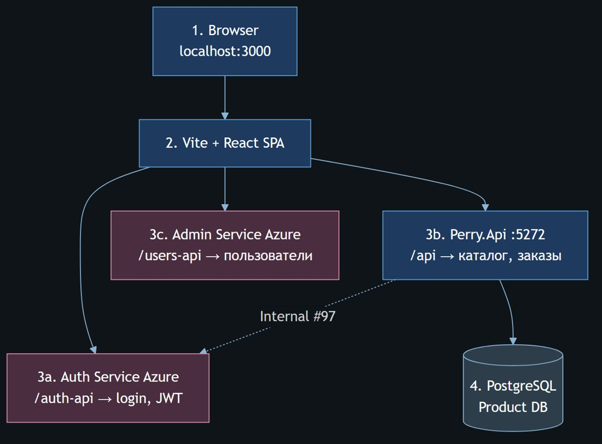
Рис. A. Общая архитектура. Источник: диаграмма защиты project_defense/views_project/01-diagram.png.
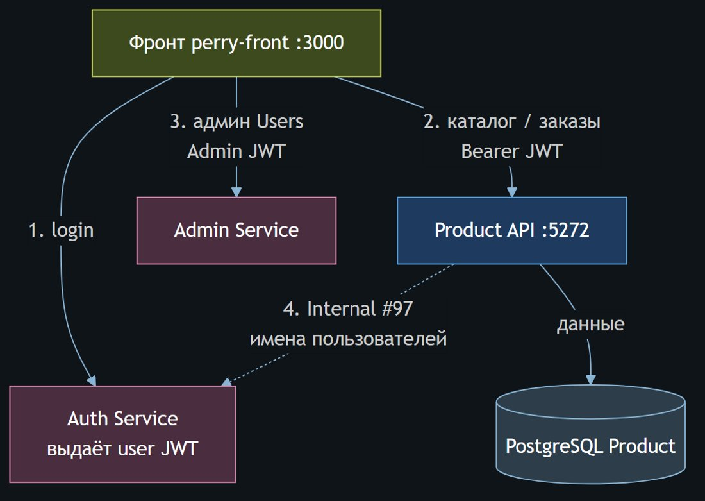
Рис. B. Три сервиса и порядок вызовов: 1) вход в Auth, 2) каталог и заказы в Product API с JWT, 3) пользователи через Admin Service, 4) внутренний запрос Product API → Auth за именами пользователей (#97). Источник: project_defense/views_project/13-diagram.png.
Та же схема в Mermaid, с местом, куда встанет автоматизация (пунктир — то, чего ещё нет):
flowchart LR
B["Браузер<br/>витрина :3000"] --> SPA["React + Vite SPA"]
M["Мобильное Expo<br/>:8081"] --> API
SPA -->|"вход, JWT"| AUTH["Auth Service<br/>Azure, Влад"]
SPA -->|"Bearer JWT<br/>/api/*"| API["Product API :5272<br/>зона Сергея"]
SPA -->|"Admin JWT"| ADM["Admin Service<br/>пользователи"]
API -->|"internal/auth/token<br/>internal/users/id"| AUTH
API --> DB[("PostgreSQL<br/>Product DB")]
API -->|"SMTP письма"| MAIL["Email покупателю"]
N8N["n8n + AI-агент<br/>будущее"] -.->|"HTTP Request<br/>сервисный токен"| API
API -.->|"вебхуки событий<br/>нужно добавить"| N8N
N8N -.-> EXT["Новая почта · Telegram<br/>Google Sheets · OpenAI"]
Как ходит запрос (кратко). Покупатель входит через Auth и получает JWT. Витрина шлёт его в Product API в заголовке Authorization: Bearer …. Product API сам проверяет подпись токена (JwtAuthenticationService.cs) и берёт из него UserId (AuthClaims.cs). Своей таблицы пользователей в Product DB нет: email и имя Product API при необходимости спрашивает у Auth по внутреннему каналу (AuthInternalClient.cs). Этот же приём, «сервис получает свой токен», нужен и для n8n: см. сервисный токен, API-2.
Что важно для автоматизации ✅:
- уже есть письма покупателю при заказе и смене статуса (OrderService.cs, строки 387–403). Значит, точки «заказ создан» и «статус изменился» в коде уже есть, к ним легко прицепить вебхук (API-1);
- при заказе остаток списывается и товар уходит в
OutOfStockна нуле (строки 344–351); - есть подписка «сообщить о поступлении», но письмо о поступлении никто не отправляет: поле
NotifiedAtUtcнигде в коде не заполняется (StockNotifyRequest.cs). Готовая быстрая победа для А2; - есть
/api/healthдля мониторинга (Program.cs) и dev-вход администратора для локальных демо (DevAdminAuthController.cs), его используют портфолио-воркфлоу.
3. Как выглядит Perry сейчас
Здесь 19 настоящих скриншотов проекта. Под каждым: что это за экран, что он делает, какой API за ним стоит и какие автоматизации к нему привязаны (ссылки ведут в потоки А–Д, а оттуда есть ссылки обратно сюда).
Источник скриншотов. Скрины с датой 04.10.2026 лежат в репозитории в
docs/screenshots/2026-10-04/: под каждым дана прямая ссылка на файл на коммитеbcaec5f. Кадры спринта 19.09.2026 и мобильный скрин взяты из локальной копииD:\Perry\My_Amazon2. На коммитеbcaec5fэтих файлов в репозитории нет, поэтому GitHub-ссылки под ними не даём. Картинки сжаты до ширины 1024 px (JPG) и лежат рядом с документом вimg/.⚠️ Замечание: в папке спринта 19.09 имена трёх файлов не совпадают с содержимым.
12-account-my-orders.pngна самом деле показывает модерацию отзывов,13-admin-reviews-approve.pngпоказывает модалку заказа, а14-account-order-details-modal.png— список «My orders». Подписи ниже сделаны по тому, что на картинке.
3.1. Витрина: путь покупателя
Рис. 1. Главная
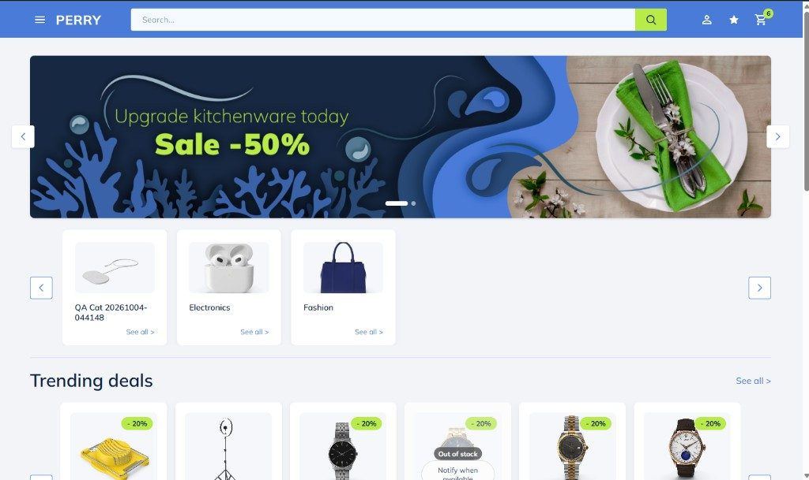
Источник: docs/screenshots/2026-10-04/home/01-home-hero.png
- Что видно: синяя шапка с поиском, иконки аккаунта, избранного и корзины (на значке 6 товаров). Баннер-карусель «Upgrade kitchenware today — Sale −50 %». Карточки категорий (Electronics, Fashion и тестовая «QA Cat…»). Блок Trending deals с бейджами «−20 %» и одной карточкой Out of stock / Notify when available.
- API: категории —
GET /api/categories, товары —GET /api/products(frontend/src/api/index.ts). Кнопка Notify шлётPOST /api/products/{id}/notify(StockNotifyController.cs). - Автоматизация: письмо «товар снова в наличии» подписчикам Notify (А2); баннеры и подборки «Trending deals» из акций, собранные AI (В1); тестовые категории вроде «QA Cat…» ловит ежедневная проверка витрины (Д2).
Рис. 2. Каталог с фильтрами
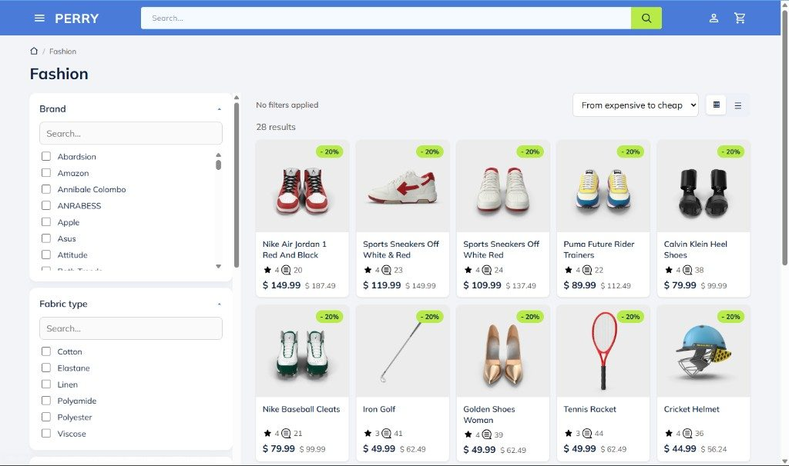
Источник: docs/screenshots/2026-10-04/catalog/06-catalog-fashion.png
- Что видно: раздел Fashion, 28 результатов, сетка карточек (фото, название, звёзды, число отзывов, цена и старая цена). Слева фильтры фасеты: Brand (Abardsion, Amazon, Apple…) и Fabric type (Cotton, Elastane, Linen…). Сортировка «From expensive to cheap».
- API:
GET /api/products?categoryId=…&brands=…&fabrics=…&sort=…(ProductsController.cs). Значения фильтров API собирает из характеристик с флагомIsFilterable, и имена жёстко заданы: «Fabric type», «Size», «Color» (строки 147–175). - Автоматизация: нормализация характеристик, чтобы фильтры не «рассыпались» на «cotton / Cotton / хлопок» (Б2); мониторинг цен конкурентов и скидок (Б4).
Рис. 3. Карточка товара
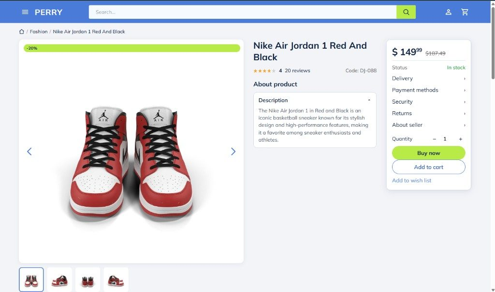
Источник: docs/screenshots/2026-10-04/product/07-product-nike-pdp.png
- Что видно: галерея из 4 фото, бейдж «−20 %», название, 4 звезды и 20 отзывов, код (SKU) DJ-088, аккордеон Description с коротким описанием. Справа: цена $149.99 (старая $187.49), статус In stock, Delivery, Payment methods, Returns, About seller, количество, Buy now / Add to cart / Add to wish list.
- API:
GET /api/products/{id}(ProductsController.cs), добавление в корзину —POST /api/cart/add(CartController.cs). - Автоматизация: AI-описание и SEO-тексты (Б1, портфолио ПФ-3); обработка фото: фон, размер, alt-текст (Б3); блоки Delivery и Returns заполняются из правил доставки «Новой почты» (А4, А6).
Рис. 4. Характеристики и отзывы на карточке
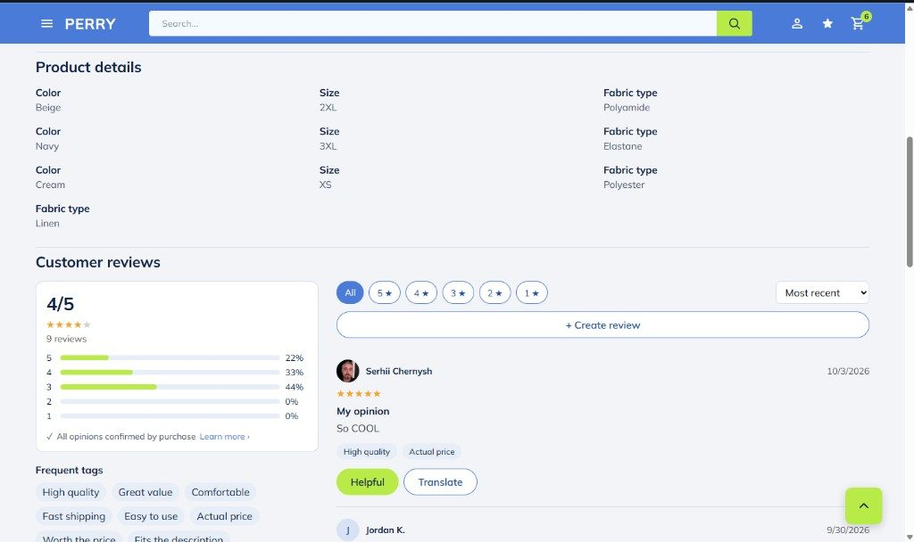
Источник: docs/screenshots/2026-10-04/product/09-product-specs-reviews.png
- Что видно: таблица Product details: три значения Color (Beige, Navy, Cream), три Size (2XL, 3XL, XS) и четыре Fabric type (Polyamide, Elastane, Polyester, Linen), хотя это кроссовки. Ниже рейтинг 4/5, распределение звёзд, Frequent tags, кнопки Helpful и Translate.
- Наблюдение ✅ по скриншоту: характеристики похожи на «шум» демо-данных. Для живого магазина это и есть ручная работа Б2: кто-то должен проверять, что у обуви нет «ткани Linen».
- API: характеристики приходят в
GET /api/products/{id}изProductAttribute(ProductAttribute.cs). - Автоматизация: AI-проверка и нормализация характеристик (Б2); анализ тегов и отзывов (В5).
Рис. 5. Отзывы покупателей
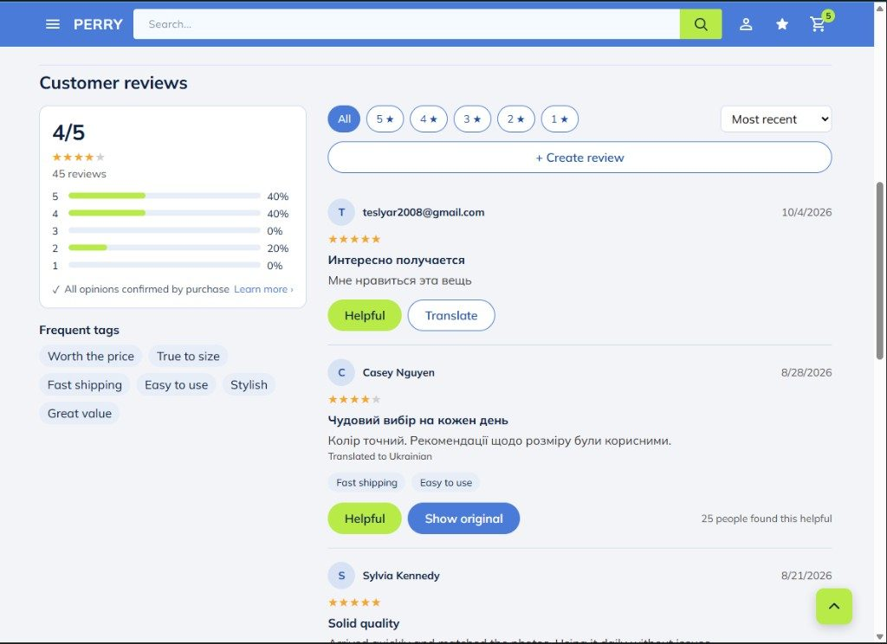
Источник: docs/screenshots/2026-10-04/product/10-product-reviews.png
- Что видно: 45 отзывов, фильтр по звёздам, + Create review. Один отзыв переведён на украинский («Translated to Ukrainian», кнопка Show original), счётчик «25 people found this helpful». У одного отзыва вместо имени автора показан email.
- API:
GET /api/reviews(публично только одобренные),POST /api/reviews, «Helpful» —POST /api/reviews/grade/{id}(ReviewController.cs). Перевод делает сам фронт через бесплатный MyMemory (translateToUk.ts). - Автоматизация: AI-модерация отзывов: спам, оскорбления, не по теме, личные данные (email) вместо имени (В5); запрос отзыва после доставки (final, шаг 8).
Рис. 6. Корзина
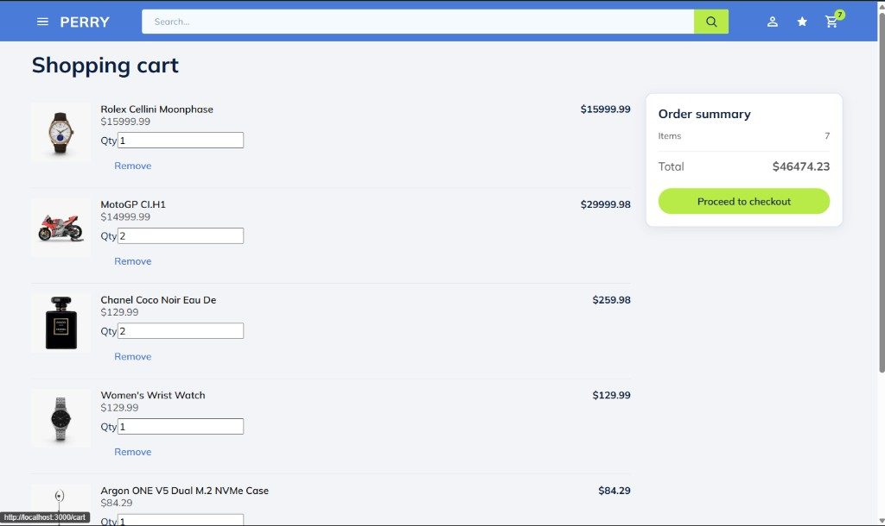
Источник: docs/screenshots/2026-10-04/cart-checkout/11-cart.png
- Что видно: позиции с полем Qty и ссылкой Remove, Order summary: 7 товаров, итог $46 474.23, кнопка Proceed to checkout.
- API:
GET /api/cart,PUT /api/cart/quantity,DELETE /api/cart/item/{id}. Гостевая корзина живёт поsessionId, после входа сливается:POST /api/cart/merge(CartController.cs). У корзины естьUpdatedAtUtc(Cart.cs). - Автоматизация: напоминание о брошенной корзине (В3). Нужен новый эндпоинт: API-7.
Рис. 7. Оформление заказа
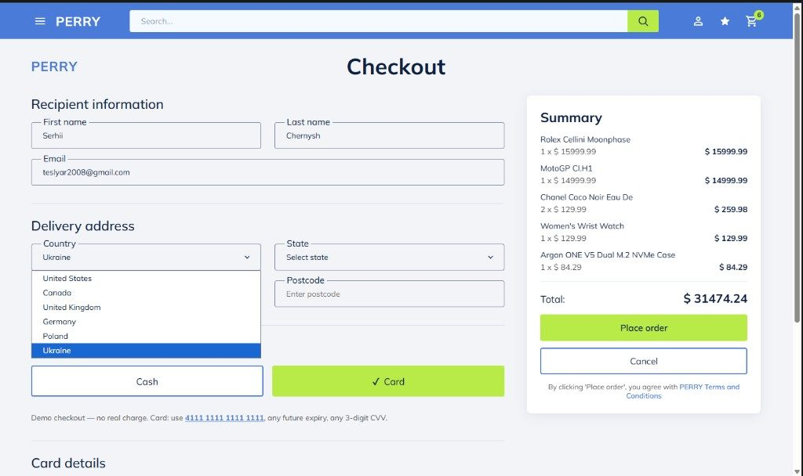
Источник: docs/screenshots/2026-10-04/cart-checkout/12-checkout-country.png
- Что видно: имя, фамилия, email; Delivery address: Country (выбрана Ukraine), State, City, Postcode; оплата Cash / Card (демо, без реального списания); Place order. На соседнем кадре 13-checkout-state-ua видно выпадающий список областей Украины.
- API:
POST /api/orders/checkout(OrdersController.cs). Страна по умолчанию — Ukraine (CheckoutPage.tsx). Адрес склеивается в одну строку «город, область, индекс, страна» (строка 390). - Наблюдение ✅: нет телефона и отделения «Новой почты», а без них накладную не создать. Это первое, что нужно добавить для А4 (API-5).
- Автоматизация: проверка адреса и выбор отделения по справочнику НП (А4); событие «заказ создан» запускает весь конвейер от заказа до доставки.
Рис. 8. Кабинет: «Мои заказы»
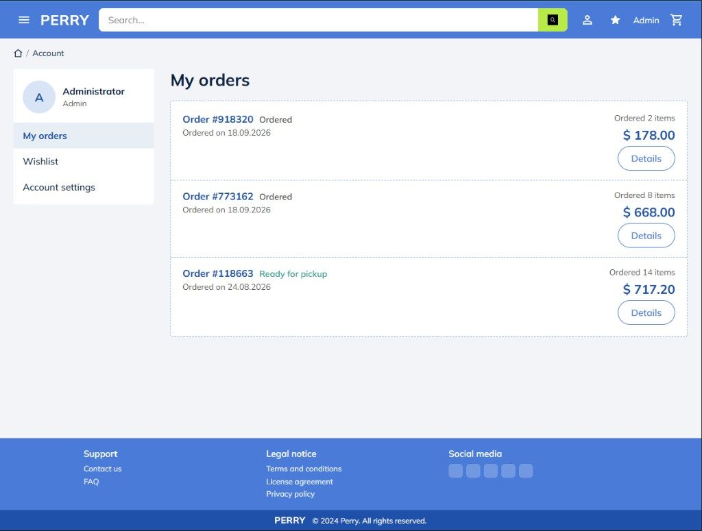
Источник: локальная копия D:\Perry\My_Amazon2, спринт 19.09.2026 (файл 14-account-order-details-modal.png). В репозитории на коммите bcaec5f не найден.
- Что видно: список заказов с номером, статусом (Ordered, Ready for pickup), датой, количеством товаров и суммой, кнопка Details.
- API:
GET /api/orders— только свои заказы (OrdersController.cs). Статусы: Ordered, Received, Shipped, ReadyToPickup, Cancelled, Returned (OrderStatus.cs). - Автоматизация: статус «Shipped» и номер ТТН подставляются сами из трекинга «Новой почты» (А5); этот же статус отвечает бот поддержки.
Рис. 9. Детали заказа
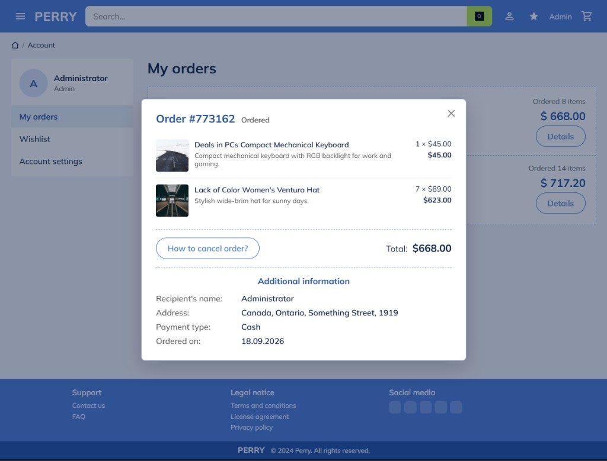
Источник: локальная копия D:\Perry\My_Amazon2, спринт 19.09.2026 (файл 13-admin-reviews-approve.png, по содержимому это модалка заказа). В репозитории на коммите bcaec5f не найден.
- Что видно: состав заказа, итог, кнопка How to cancel order?, блок Additional information: получатель, адрес «Canada, Ontario, Something Street, 1919», оплата Cash, дата.
- Наблюдение ✅: этот адрес — значение по умолчанию в коде, если покупатель адрес не передал (OrderService.cs). Для реальной доставки нужна валидация (А4, API-5).
- Автоматизация: ответ на «как отменить заказ» даёт FAQ-бот; возврат запускает А6.
Рис. 10. Избранное (Wishlist)
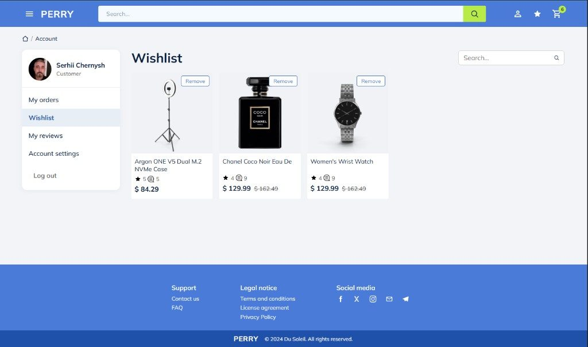
Источник: docs/screenshots/2026-10-04/account/16-account-wishlist.png
- Что видно: три товара в избранном (два со скидкой), меню кабинета, футер с Contact us, FAQ и иконками соцсетей (Facebook, X, Instagram, email, Telegram).
- API:
GET/POST/DELETE /api/wishlist(WishlistController.cs); для админа есть сводка «что чаще добавляют» —GET /api/admin/wishlist/summary(AdminWishlistController.cs). - Автоматизация: письмо «товар из вашего избранного подешевел» (В4); топ wishlist в еженедельном маркетинг-отчёте (В7); ссылка Telegram в футере ведёт к боту поддержки.
3.2. Вход и регистрация (Auth)
Рис. 11. Вход
Источник: docs/screenshots/2026-10-04/auth/22-auth-login.png
- Что видно: форма входа (Email, Password, Stay signed in, Forgot password?), иллюстрация в стиле бренда. Рядом в репозитории кадры регистрации, подтверждения email 6-значным кодом и восстановления пароля (папка auth).
- API: Auth Service (зона Влада), фронт ходит через прокси
/auth-api(client.ts). - Автоматизация: напрямую не трогаем, это чужая зона. Используем Auth только чтобы n8n получил сервисный токен (API-2), и для приветственной серии писем после регистрации (В4, ❓ нужен вебхук «пользователь зарегистрирован» от Auth: вопрос 5).
3.3. Админка
Рис. 12. Панель администратора
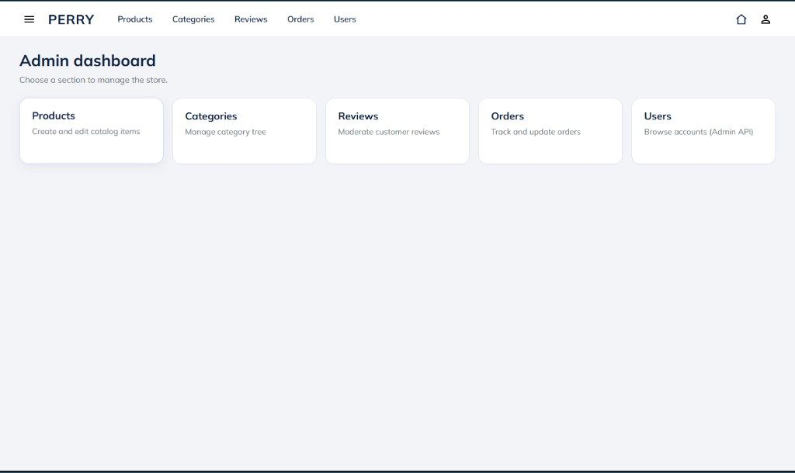
Источник: docs/screenshots/2026-10-04/admin/34-admin-dashboard.png
- Что видно: пять плиток: Products (create and edit catalog items), Categories, Reviews (moderate customer reviews), Orders (track and update orders), Users (browse accounts, Admin API). Цифр (выручка, остатки) на панели нет.
- Автоматизация: то, чего нет на панели, приходит в Telegram: ежедневный KPI-дайджест и алерты об аномалиях. В будущем сюда же встраивается окно одобрений от AI-агента (раздел 11).
Рис. 13. Товары
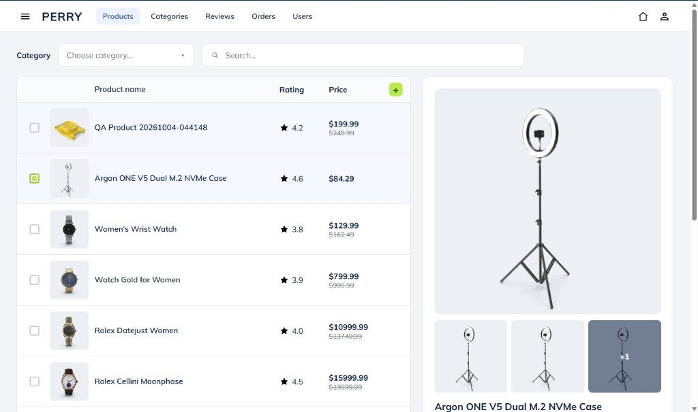
Источник: docs/screenshots/2026-10-04/admin/35-admin-products.png
- Что видно: фильтр по категории, поиск, таблица (миниатюра, название, рейтинг, цена и старая цена), кнопка «+», справа галерея выбранного товара. Колонки «остаток» в списке нет.
- API:
GET /api/products; в ответе списка естьStatus, но нетStockQuantity(ProductsController.cs). Остаток отдаёт толькоGET /api/products/update/{id}по одному товару (строки 186–211). - Автоматизация: синхронизация остатков с поставщиками (А1), алерты «мало на складе» (А2). Для них нужен эндпоинт остатков (API-3).
Рис. 14. Создание товара
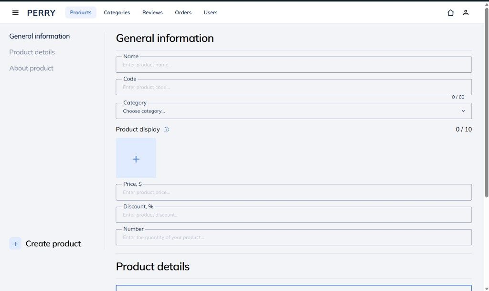
Источник: docs/screenshots/2026-10-04/admin/36-admin-create-product.png
- Что видно: форма в три блока (General information, Product details, About product): Name, Code, Category, до 10 фото, Price $, Discount %, Number (количество на складе).
- API:
POST /api/productsиPUT /api/products/{id}с ролями Admin или Seller (ProductsController.cs). - Автоматизация: именно эту форму человек сейчас заполняет руками ≈ 25 минут на товар ⚠️. AI-агент заполняет черновик из прайса поставщика (описание, характеристики, about), человек проверяет (Б1, Б2, Б3).
Рис. 15. Категории
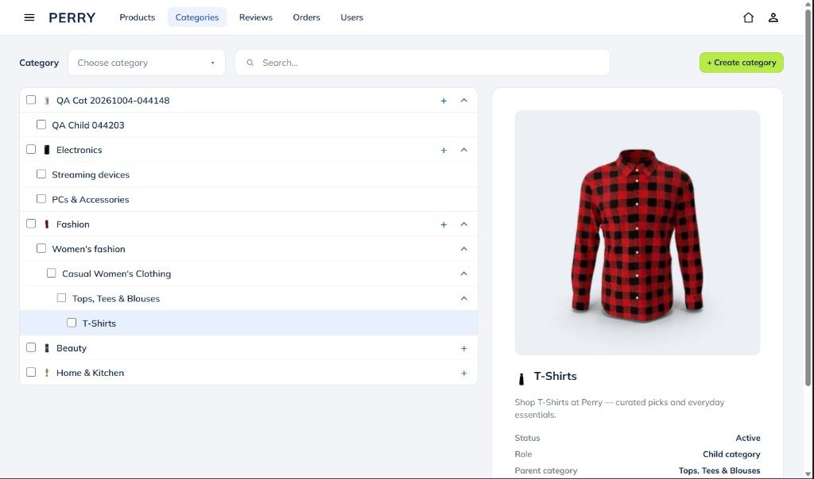
Источник: docs/screenshots/2026-10-04/admin/37-admin-categories.png
- Что видно: дерево категорий до 5 уровней (Fashion → Women's fashion → Casual Women's Clothing → Tops, Tees & Blouses → T-Shirts), справа фото, описание «Shop T-Shirts at Perry — curated picks…», статус Active, роль, родитель. Вверху тестовые «QA Cat / QA Child».
- API:
GET/POST/PUT/DELETE /api/categories(запись только Admin) (CategoriesController.cs). - Автоматизация: AI предлагает категорию для нового товара и SEO-описание категории (Б1); проверка «тестовые категории на витрине» (Д2).
Рис. 16. Модерация отзывов
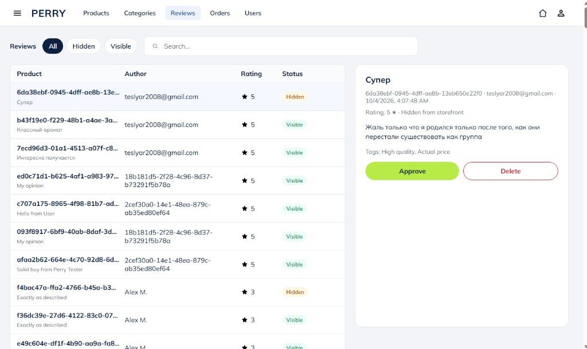
Источник: docs/screenshots/2026-10-04/admin/39-admin-reviews.png
- Что видно: фильтры All / Hidden / Visible, таблица Product / Author / Rating / Status. В колонке Product показан GUID товара вместо названия, в Author — email или GUID. Справа открыт скрытый отзыв с текстом, который не относится к товару, и кнопки Approve / Delete.
- API:
GET /api/reviews(админ видит и скрытые),PATCH /api/reviews/disable-many,DELETE /api/reviews/{id}(ReviewController.cs); на фронте — index.ts. - Автоматизация: AI-модератор ставит каждому новому отзыву метку (ок / спам / не по теме / личные данные / жалоба на доставку) и предлагает решение; человек жмёт Approve или Delete уже по готовой подсказке (В5). Жалобы на доставку уходят в А6 и Г3.
Рис. 17. Заказы
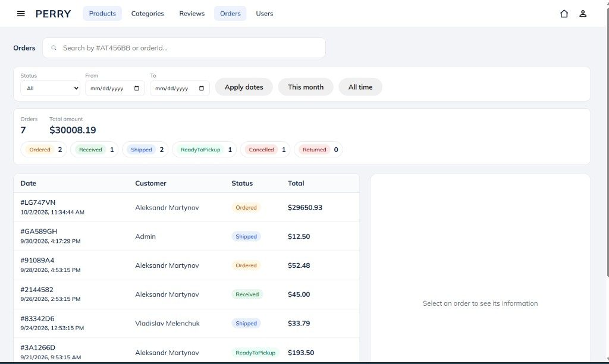
Источник: docs/screenshots/2026-10-04/admin/40-admin-orders.png
- Что видно: поиск «by #AT456BB or orderId», фильтры статуса и дат, итоги Orders 7 · Total $30 008.19, счётчики Ordered 2 / Received 1 / Shipped 2 / ReadyToPickup 1 / Cancelled 1 / Returned 0, список с номером, датой, покупателем, статусом, суммой. На кадре спринта 19.09 (
10-admin-orders-details.png, локальная копия) справа видно смену статуса выпадающим списком. - API:
GET /api/orders/adminс фильтрами и готовымиstatusCounts,totalAmount, сравнением периодов (OrdersController.cs); смена статуса —PUT /api/orders/{id}/status(строки 162–171). Поиск по номеру#AT456BBработает через параметрorderId(OrderService.cs). - Автоматизация: главный источник данных для KPI-дайджеста (без доработок API), сборочных листов, ТТН и бота «где мой заказ».
Рис. 18. Пользователи
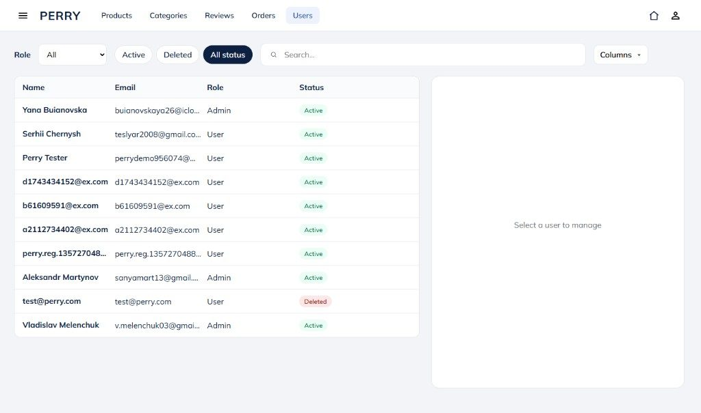
Источник: docs/screenshots/2026-10-04/admin/41-admin-users.png
- Что видно: роли (Admin, User), статусы Active / Deleted, настройка колонок.
- API: не Product API, а отдельный Admin Service (
/users-api,/api/admin/users) (index.ts). - Автоматизация: сегменты для рассылок (активные покупатели, без заказов 30 дней) (В4). ❓ Доступ n8n к Admin Service нужно согласовать с владельцем (вопрос 4). Персональные данные покупателей в AI-модель не отправляем (риск R5).
3.4. Мобильное приложение
Рис. 19. Главная в мобильном приложении (Expo)
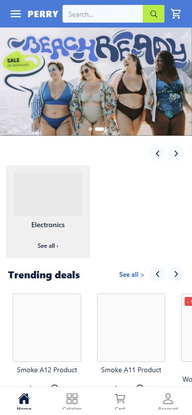
Источник: локальная копия D:\Perry\My_Amazon2 (файл mobile-home.png). В репозитории на коммите bcaec5f не найден. Код приложения — mobile/src/screens.
- Что видно: та же шапка, баннер «Beach Ready — Sale on swimsuits», карточка Electronics, Trending deals с тестовыми товарами «Smoke A12 / A11 Product» (картинки не загрузились), нижнее меню Home / Catalog / Cart / Account.
- API: тот же Product API (mobile/src/api/client.ts).
- Автоматизация: любые изменения каталога из Б сразу видны и в мобильном. Тестовые товары и пустые картинки на витрине ловит Д2. Push-уведомления о статусе заказа ❓ — в будущем, после API-1.
4. Части проекта подробно
Для каждой части: что это, как выглядит, что делает, какой API, где её касается автоматизация.
4.1. Витрина (frontend, React + Vite)
- Что это: одностраничное приложение (SPA) на React 19, макет по Figma. Запуск —
localhost:3000, запросы/apiпроксируются на Product API:5272(README). - Как выглядит: рис. 1–10: синяя шапка с поиском, светлые карточки, салатовые кнопки.
- Что делает: маршруты главной, каталога, товара, корзины, checkout, кабинета, legal и 404 (router.tsx); админка живёт в том же приложении под
/admin(строки 101–114). - API: все вызовы собраны в одном файле frontend/src/api/index.ts.
- Автоматизация: витрину почти не меняем. Добавляем телефон и отделение НП в checkout (API-5), трекинг-номер в «Мои заказы» (А5), позже виджет чата с ботом (Г1).
4.2. Product API (зона Сергея)
- Что это: REST-сервис на ASP.NET Core 8, три слоя:
Perry.Api(контроллеры),Perry.Domain(сущности),Perry.Infrastructure(БД, сервисы). Swagger на/swagger(Program.cs). - Как выглядит: экрана нет, его «лицо» — Swagger. Данные видны на всех экранах витрины.
- Что делает: каталог с фильтрами, карточка, корзина гостя и пользователя, checkout со списанием остатков, статусы заказа с письмами, отзывы с модерацией, wishlist, подписка «сообщить о поступлении», health-check.
- Сущности: товар с SKU, ценой, старой ценой, остатком и статусом (Product.cs); заказ с номером
#AT456BB, суммой, адресом, оплатой (Order.cs); позиция заказа со «снимком» цены и названия (OrderItem.cs); отзыв с оценкой 1–5 и флагомIsApproved(ProductReview.cs). - Права: политики
AdminAccessиSellerAccessпо роли из JWT (Program.cs). - Автоматизация: главная точка интеграции. Все потоки А–Д читают данные отсюда, а раздел 13 перечисляет, что сюда нужно добавить.
4.3. Auth-сервис (зона Влада)
- Что это: отдельный сервис в Azure: регистрация, вход, подтверждение email кодом, сброс пароля, выдача JWT (HS256, общий секрет с Product API).
- Как выглядит: рис. 11 и кадры регистрации и кода.
- Что делает для Product API: выдаёт сервисный токен по
POST /internal/auth/token(имя сервиса + секрет из env) и отдаёт данные пользователя поGET /internal/users/{id}(AuthInternalClient.cs). - Автоматизация: просим у Влада отдельный сервисный аккаунт
n8n-automationс узкими правами (API-2, вопрос 3).
4.4. Админка (UI + Admin Service)
- Что это: раздел
/adminтой же витрины (frontend/src/pages/admin) плюс отдельный Admin Service для пользователей. Бэкенд админки — зона другого участника команды. - Как выглядит: рис. 12–18: светлая шапка, таблица слева, детали справа.
- Что делает: товары, категории, модерация отзывов, заказы со сменой статуса, пользователи с ролями. Поток админских заказов на защите показан диаграммой 16-admin-orders-flow:
GET /api/orders/admin→PUT /orders/{id}/status→UpdatedAtUtc. - Автоматизация: админка становится местом, где человек одобряет то, что подготовил агент: черновики товаров, ответы на отзывы, закупки (раздел 11). Пока окна одобрений нет, роль играет Telegram с кнопками.
4.5. Мобильное приложение (Expo)
- Что это: React Native на Expo, экраны Home, Products, Product, Cart, Checkout, Orders, Order details, Account, Login, Register (mobile/src/screens). Токен хранится в
expo-secure-store(package.json). - Как выглядит: рис. 19.
- Автоматизация: пользуется тем же API, поэтому получает плоды потоков А–Д бесплатно. ❓ Push-уведомления — после того как появятся вебхуки (API-1).
5. Админка: что неудобно и что автоматизировать
Админка Perry аккуратная и рабочая, но сделана как «таблица + карточка справа»: каждое действие — руками, по одному объекту. Для дипломного проекта это нормально. Для магазина на 50 заказов в день ⚠️ это и есть те самые часы, которые ищет вакансия. Ниже разбор по каждому экрану: сначала что неудобно (✅ видно на скрине или в коде), потом что поправить в интерфейсе (дёшево, без AI) и что отдать автоматизации.
Бэкенд админки и Admin Service — зона другого участника команды. Всё, что ниже касается их кода, это предложения для обсуждения, а не готовые решения (вопрос 4).
| Экран | Что неудобно сейчас | Что улучшить в интерфейсе | Что автоматизировать |
|---|---|---|---|
| Панель | ✅ Только 5 плиток-ссылок, ни одной цифры: не видно выручки за день, новых заказов, товаров на нуле, отзывов на модерации | Счётчики на плитках: «Orders: 12 новых», «Reviews: 7 ждут» | Д1 KPI-дайджест в Telegram каждое утро, Д2 алерты; позже — лента «ждёт вашего одобрения» от агента (раздел 11) |
| Товары | ✅ В списке нет колонки остатка и фильтра по статусу (Draft / OutOfStock). ✅ Нет массового редактирования и импорта из файла. ✅ Сохранение товара перезаписывает фото и характеристики целиком (код) | Колонка «Stock», фильтр «мало на складе», массовая смена цены и статуса | А1 остатки и цены из прайсов поставщиков, А2 алерты и черновик закупки, Б4 цены конкурентов |
| Создание товара | ✅ Всё заполняется руками: название, код, категория, до 10 фото, цена, скидка, количество, характеристики, about. ⚠️ ≈ 25 мин на товар | Кнопка «Дублировать товар», шаблоны характеристик по категории | Б1 AI-черновик описания и SEO, Б2 характеристики из прайса, Б3 обработка фото. Человек только проверяет (ПФ-3) |
| Категории | ✅ В боевом дереве видны тестовые «QA Cat / QA Child». Описание категории пишется вручную | Флаг «скрыть с витрины», отдельная тестовая среда | Б1 AI-описания категорий, Д2 проверка «тестовые данные на витрине» |
| Отзывы | ✅ В колонке Product GUID вместо названия, в Author — email или GUID: модератор не понимает, о чём отзыв, не открыв его. ✅ Решение по одному отзыву. ✅ Нет причины скрытия | Название товара и имя автора вместо ID; массовое одобрение (в API уже есть disable-many, код) |
В5 AI-метка и предложенное решение для каждого отзыва, сводка тем «на что жалуются»; жалобы на доставку → Г3 |
| Заказы | ✅ Нет телефона, отделения НП и номера ТТН. ✅ Статус меняется вручную по одному заказу. ✅ Нет печати сборочного листа и выгрузки | Поля доставки в карточке заказа, массовая смена статуса, кнопка «Печать» | А3 сборочные листы, А4 ТТН одним кликом или автоматически, А5 статус из трекинга НП, Г1 бот отвечает клиентам сам |
| Пользователи | ✅ Видно только имя, email, роль, статус. Нет числа заказов, суммы покупок, даты последнего заказа | Колонки «Orders», «Spent», «Last order» | В4 сегменты для рассылок, В6 лиды в CRM |
Главная мысль для собеседования: автоматизация не заменяет админку, а меняет роль админа с «оператора, который вбивает данные» на «контролёра, который одобряет то, что подготовил робот». Как это устроено технически, показано в разделе 10 и на итоговой схеме.
6. Развитие сервиса: чего не хватает магазину
Что нужно Perry, чтобы стать настоящим магазином в Украине. Список собран по коду и скриншотам. Где-то это доработка Product API (зона Сергея), где-то — других частей.
| № | Чего не хватает | Как видно, что этого нет | Что сделать | Связь с автоматизацией |
|---|---|---|---|---|
| G1 | Доставка «Новой почтой»: телефон, город и отделение из справочника НП, номер ТТН | ✅ В checkout только страна, область, город, индекс (рис. 7); в Order одна строка адреса (Order.cs) |
Поля в заказе + выбор отделения на checkout | А4, А5, API-5 |
| G2 | Реальная оплата (эквайринг) | ✅ «Demo checkout — no real charge» на рис. 7; допустимы только Cash, Card, Online (код) | ❓ Подключить платёжного провайдера, статус «оплачен» по его вебхуку | шаг «оплата» на итоговой схеме |
| G3 | Гривна и украинский интерфейс | ✅ Цены в $ на всех скринах, интерфейс на английском; переводятся только отзывы (рис. 5) | Валюта UAH, локализация UA | Б1 AI-переводы карточек |
| G4 | Письмо «снова в наличии» | ✅ Подписка есть, а NotifiedAtUtc никто не заполняет (код) |
Отправка при пополнении остатка | А2, API-6 |
| G5 | Возвраты с возвратом на склад | ✅ Статус Returned есть (OrderStatus.cs), но смена статуса остаток не трогает (код) |
Возврат товара на склад и причина возврата | А6, API-8 |
| G6 | Промокоды и акции | ✅ В коде нет ни промокодов, ни купонов (поиск по `promo | coupon` пуст); скидка только через «старую цену» (Product.cs) | ❓ Сущность «промокод» |
| G7 | Брошенные корзины | ✅ Есть Cart.UpdatedAtUtc, но никто корзины не перебирает |
Эндпоинт списка «старых» корзин | В3, API-7 |
| G8 | Поддержка в мессенджере | ✅ В футере иконка Telegram (рис. 10), бота нет | Telegram-бот | Г1–Г3 |
| G9 | Аналитика и источники трафика | ✅ Есть просмотры, продажи, wishlist (ProductStatisticsService), но нет UTM и воронки | Сохранять UTM в заказе | В6, В7 |
| G10 | События для внешних систем (вебхуки) | ✅ Product API умеет только слать письма по SMTP (IEmailSender.cs) | Исходящие вебхуки | вся система автоматизации, API-1 |
7. Цель и метрики
Цель: снять с людей повторяющуюся работу и доказать цифрами, сколько часов и денег это дало, как требует вакансия.
| Метрика | Как считаем | Целевое значение ⚠️ примерная оценка | Откуда берём данные |
|---|---|---|---|
| Сэкономленные часы в месяц | (запусков воркфлоу за месяц) × (минут ручной работы на 1 запуск до автоматизации) ÷ 60. Запуски, где человек всё равно доделывал руками, считаем с понижающим коэффициентом | ≥ 250 ч/мес к 8-й неделе, ≈ 362 ч/мес к 12-й (раздел 14) | журнал запусков n8n (execution log) + замер «до» секундомером |
| Деньги | часы × стоимость часа сотрудника | пример ставки: 200 грн/ч ⚠️ (≈ 33 600 грн за 168 ч; это не данные Race Expert, а условное число для расчёта) | бухгалтерия ❓ |
| Ошибки | доля заказов с ошибкой в ТТН, адресе, количестве | с ≈ 2 % до < 0,3 % ⚠️ | возвраты НП «адресат не найден», жалобы |
| Скорость ответа клиенту | время от вопроса «где мой заказ» до ответа | с ≈ 2 ч до < 1 мин ⚠️ | логи бота |
| Скорость обработки заказа | время от «заказ создан» до «ТТН создана» | с ≈ 4 ч до < 10 мин ⚠️ | события API-1 |
| Использование | доля процессов, которые реально идут через автоматизацию | > 80 % | n8n Insights ✅ (есть в планах n8n, раздел 12) |
| Стоимость автоматизации | сервер + AI-вызовы + платные тарифы | < 3 % от сэкономленных денег ⚠️ | раздел 11.4, раздел 12 |
Допущения о магазине ⚠️ (Perry пока не продаёт по-настоящему, поэтому берём «условный магазин размера Race Expert»: 10–50 сотрудников):
| Параметр | Значение | Почему так |
|---|---|---|
| Заказов в день | 50 (≈ 1 500 в месяц) | средний интернет-магазин такого размера; требует уточнения |
| Активных товаров (SKU) | ≈ 1 200 | в демо 194, умножаем «на живой ассортимент» |
| Поставщиков | 6 | допущение |
| Новых товаров в месяц | 100 | допущение |
| Обращений в поддержку | 30 в день (900 в месяц), из них ≈ 60 % «где мой заказ» | типичная доля для e-commerce, допущение |
| Возвратов | 3 % заказов (45 в месяц) | допущение |
| Отзывов | 300 в месяц | допущение |
8. Карта ручных процессов
Все цифры — ⚠️ примерная оценка при допущениях выше. «Доля» — какую часть работы забирает автоматизация. Остальное остаётся человеку (проверка, исключения).
| № | Процесс | Кто делает | Раз в месяц | Мин на раз | Ручных ч/мес | Доля | Экономия ч/мес |
|---|---|---|---|---|---|---|---|
| А1 | Сверка остатков и цен с прайсами поставщиков | закупки | 180 (6 × 30 дней) | 15 | 45,0 | 85 % | 38 |
| А2 | Низкие остатки, заявка поставщику, «снова в наличии» | закупки | 48 | 30 | 24,0 | 70 % | 17 |
| А3 | Сборочный лист по заказам | склад | 1 500 | 1,5 | 37,5 | 80 % | 30 |
| А4 | Накладная (ТТН) «Новой почты» | склад / оператор | 1 500 | 3 | 75,0 | 85 % | 64 |
| А5 | Трекинг и уведомления клиенту | оператор | 1 500 | 1 | 25,0 | 90 % | 22 |
| А6 | Возвраты | оператор + склад | 45 | 20 | 15,0 | 50 % | 7,5 |
| Б1 | Описания и SEO для новых товаров | контент | 100 | 25 | 41,7 | 70 % | 29 |
| Б2 | Нормализация характеристик (фильтров) | контент | 100 | 10 | 16,7 | 75 % | 12,5 |
| Б3 | Обработка фото | контент | 500 фото | 3 | 25,0 | 80 % | 20 |
| Б4 | Мониторинг цен конкурентов | категорийный менеджер | 30 | 30 | 15,0 | 80 % | 12 |
| В1 | Посты и объявления о новинках и скидках | маркетолог | 30 | 40 | 20,0 | 60 % | 12 |
| В2 | Публикация по расписанию | маркетолог | 30 | 10 | 5,0 | 80 % | 4 |
| В3 | Напоминания о брошенной корзине | сейчас никто | 500 корзин | — | 0 | — | 0 (эффект в продажах) |
| В4 | Email- и Telegram-рассылки | маркетолог | 8 | 90 | 12,0 | 60 % | 7 |
| В5 | Модерация и анализ отзывов | контент | 300 | 2 | 10,0 | 70 % | 7 |
| В6 | Лиды и UTM в CRM | продажи | 200 | 3 | 10,0 | 90 % | 9 |
| В7 | Еженедельный отчёт маркетинга | маркетолог | 4 | 180 | 12,0 | 85 % | 10 |
| Г1 | Ответы «где мой заказ» | поддержка | 540 | 4 | 36,0 | 70 % | 25 |
| Г2 | Ответы на частые вопросы | поддержка | 360 | 3 | 18,0 | 60 % | 11 |
| Г3 | Передача сложных вопросов человеку с резюме | поддержка | 300 | 1 | 5,0 | 80 % | 4 |
| Д1 | Ежедневная сводка KPI | руководитель | 30 | 30 | 15,0 | 90 % | 13,5 |
| Д2 | Поиск аномалий | руководитель | 30 | 20 | 10,0 | 80 % | 8 |
| Итого | ≈ 473 | ≈ 362,5 |
Ручная работа по потокам (ч/мес, ⚠️ оценка):
pie showData title Ручные часы в месяц по потокам "А. Склад и логистика" : 221.5 "Б. Каталог и контент" : 98.4 "В. Маркетинг" : 69 "Г. Поддержка" : 59 "Д. Отчётность" : 25
Вывод: почти половина ручной работы — склад и логистика, и она растёт вместе с числом заказов. Поэтому поток А идёт первым, а поток Д берём как самую быструю победу: данные уже отдаёт GET /api/orders/admin.
9А. Поток А. Склад и логистика
Цель
Чтобы заказ сам доходил от «оформлен» до «ТТН создана, клиент получил номер», а остатки на сайте совпадали со складом и поставщиками. Человек на складе собирает коробки, а не переписывает адреса.
Как сейчас → как будет
| Сейчас (⚠️ типичный ручной процесс, в Perry ещё не реализован) | Будет |
|---|---|
| Менеджер утром открывает прайсы 6 поставщиков (Excel, email) и правит остатки в форме товара по одному | n8n раз в час читает прайсы, сверяет по SKU и обновляет остатки одним запросом (А1) |
| Товар закончился — узнают, когда клиент пожалуется | Алерт «осталось < 5 шт.» в Telegram и готовый черновик заказа поставщику (А2) |
| Кладовщик переписывает состав заказов на бумагу | Сборочный лист в Google Sheets и PDF появляется сам при новом заказе (А3) |
| Оператор копирует адрес в кабинет «Новой почты» и создаёт ТТН руками, ≈ 3 мин на заказ | ТТН создаётся через API НП, номер сохраняется в заказ (А4) |
| Клиент пишет «где посылка?» | Статус НП подтягивается каждые 2 часа, клиент получает уведомление сам (А5) |
| Возврат оформляют по переписке | Форма возврата → проверка → ТТН возврата → остаток обратно на склад (А6) |
Схема
flowchart TB
subgraph SUP["Поставщики"]
P1["Прайсы XLSX / CSV / email"]
end
subgraph N8N["n8n: поток А"]
A1["А1 Schedule Trigger 1 ч<br/>сверка остатков и цен"]
A2["А2 IF остаток меньше порога<br/>алерт + черновик закупки"]
A3["А3 Webhook order.created<br/>сборочный лист"]
A4["А4 HTTP Request НП<br/>InternetDocument.save"]
A5["А5 Schedule Trigger 2 ч<br/>TrackingDocument.getStatusDocuments"]
A6["А6 Webhook возврат<br/>ТТН возврата + restock"]
end
API["Product API Perry"]
NP["API Новой почты"]
TG["Telegram: склад, закупки, клиент"]
GS["Google Sheets: листы и журнал"]
P1 --> A1 -->|"PATCH stock, API-3"| API
API -->|"остатки"| A2 --> TG
API -->|"order.created, API-1"| A3 --> GS
A3 --> A4 --> NP
A4 -->|"ТТН в заказ, API-5"| API
A5 --> NP
A5 -->|"статус Shipped"| API
A5 --> TG
A6 --> NP
A6 -->|"restock, API-8"| API
HUMAN(["Человек одобряет<br/>закупку и возврат"]) -.-> A2
HUMAN -.-> A6
Шаги автоматизации
А1. Синхронизация остатков и цен с поставщиками
Экраны: товары, создание товара · модуль: Product API · нужно: API-3, API-4
- Schedule Trigger — раз в час (или Gmail Trigger на письмо с прайсом).
- HTTP Request / Read Binary File / Gmail — забрать файл прайса поставщика.
- Extract from File — XLSX или CSV в строки.
- Code — привести к общему виду
{sku, qty, purchasePrice}; разные поставщики называют колонки по-разному, правила лежат в Data table n8n. - HTTP Request →
GET /api/admin/stock?skus=…(API-3) — текущие остатки Perry. - Compare Datasets — найти расхождения по SKU.
- IF — расхождение больше 30 % или цена изменилась больше чем на 10 %? → в Telegram «Send and Wait for Response» на одобрение человеку (HITL). Мелкие расхождения проходят сами.
- HTTP Request →
PATCH /api/admin/stock/bulk(API-3) с ключом идемпотентности (API-9). - Google Sheets — строка в журнал: сколько SKU обновлено, кем, когда.
Важно ✅: сейчас обновить остаток можно только через PUT /api/products/{id}, который перезаписывает фото, характеристики и about целиком (ProductsController.cs). А GET /api/products/update/{id} отдаёт характеристики без флага IsFilterable (строки 221–223), и при обратной отправке флаг станет false (строка 685, по умолчанию IsFilterable = false, строка 528). Фильтры каталога (рис. 2) после такой синхронизации сломаются. Поэтому для А1 обязателен отдельный эндпоинт остатков (API-3).
А2. Низкие остатки, черновик закупки и «снова в наличии»
Экраны: главная, карточка Notify, товары · нужно: API-3, API-6
- Schedule Trigger — каждое утро в 08:00 (или вебхук
product.stock_low, API-1). - HTTP Request → остатки (API-3) и продажи за 14 дней (
GET /api/orders/admin?fromUtc=…, код). - Code — «дней до нуля» = остаток ÷ средние продажи в день; порог 7 дней ⚠️.
- OpenAI (или AI Agent) — собрать черновик письма поставщику: таблица SKU и количество, вежливый текст на украинском.
- Telegram «Send and Wait for Response» — менеджер закупок жмёт «Отправить» или «Исправить».
- Gmail — письмо поставщику после одобрения.
- Ветка «снова в наличии»: вебхук
product.back_in_stock→ HTTP RequestGET /api/admin/stock-notify/pending?productId=…(API-6) → Send Email каждому подписчику →PATCH …/notified. Сегодня подписка сохраняется (StockNotifyController.cs), а письма о поступлении нет совсем (G4).
А3. Сборочный лист по заказу
Экраны: заказы, детали заказа · нужно: API-1
- Webhook — событие
order.createdот Perry (API-1). До появления вебхука — Schedule Trigger каждые 10 минут + HTTP RequestGET /api/orders/admin?status=Ordered&fromUtc=…(работает уже сейчас, код). - Split Out — позиции заказа (в ответе есть
itemsс названием, количеством, ценой, картинкой, код). - Code — сгруппировать по ячейкам склада ❓ (в Perry нет адреса ячейки, вопрос 7).
- Google Sheets — строка в лист «Сборка на сегодня»; HTML + Convert to File — PDF для печати.
- Telegram — складу: «Новый заказ #AT456BB, 3 позиции, лист готов».
- HTTP Request →
PUT /api/orders/{id}/status=Received(код). Клиент сразу получает письмо, его уже шлёт Perry (OrderService.cs).
А4. Накладная (ТТН) «Новой почты»
Экраны: checkout, детали заказа, заказы · нужно: API-5, G1
API «Новой почты» ✅ (документация): один адрес https://api.novaposhta.ua/v2.0/json/, метод POST, в теле JSON apiKey, modelName, calledMethod, methodProperties. Ключ бесплатный, создаётся в бизнес-кабинете: «Настройки → Безопасность» (novaposhta.ua).
- Webhook
order.created(или кнопка «Создать ТТН» в админке → Webhook). - HTTP Request →
GET /api/orders/{id}+ контакты получателя (API-5). - IF — есть телефон и
warehouseRef? Нет → Telegram оператору «заполните доставку» (ручная ветка). - HTTP Request → НП: справочник городов и отделений (модель
Address, методы поиска населённых пунктов и отделений ❓ сверить точные имена методов с документацией) — только если в заказе пришёл текст, а неRef. - HTTP Request → НП: получатель (модель
Counterparty) ❓ уточнить порядок вызовов. - Code — вес и объём из товаров ❓ (в
Productнет веса, вопрос 8); по умолчанию 1 кг ⚠️. - HTTP Request → НП
InternetDocument/save✅ — создать ТТН; в ответе номерIntDocNumberиRef. - HTTP Request →
PUT /api/orders/{id}/shipment(API-5) — сохранить номер ТТН; статусShipped. - Telegram / Send Email — клиенту номер ТТН и ссылку на трекинг.
- Error Trigger — любая ошибка НП → в чат операторов, заказ помечается «нужен человек».
sequenceDiagram
autonumber
participant P as Product API
participant N as n8n
participant NP as API Новой почты
participant O as Оператор (Telegram)
participant C as Клиент
P->>N: Webhook order.created (orderId, orderNumber)
N->>P: GET /api/orders/id + доставка (API-5)
alt нет телефона или отделения
N->>O: Заполните доставку для #AT456BB
O-->>N: данные исправлены
end
N->>NP: InternetDocument.save
NP-->>N: IntDocNumber, Ref
N->>P: PUT /api/orders/id/shipment (ТТН, Shipped)
P-->>C: письмо о смене статуса (уже есть в коде)
N->>C: Telegram или email с номером ТТН
А5. Трекинг и уведомления клиенту
Экраны: Мои заказы, заказы в админке · связано: Г1
- Schedule Trigger — каждые 2 часа с 8:00 до 22:00.
- HTTP Request → Perry: заказы в статусе
Shippedс ТТН (API-5). - Code — пачки по 100 номеров ⚠️ (ограничение на запрос сверить с документацией ❓).
- HTTP Request → НП
TrackingDocument/getStatusDocuments✅ (Documents: [{DocumentNumber, Phone}]); в ответеStatus,StatusCode, дата доставки. - Switch по
StatusCode: «прибыл в отделение» →ReadyToPickup; «получено» →Received❓ (в Perry статусReceivedназван «бывший Paid», OrderStatus.cs; нужна договорённость, что значит каждый статус, вопрос 6). - HTTP Request →
PUT /api/orders/{id}/status— Perry сам шлёт письмо. - Telegram — клиенту, если он подключил бота (Г1).
- Через 3 дня после «получено» → запрос отзыва (шаг 8 итоговой схемы).
А6. Возвраты
Экраны: детали заказа · нужно: API-8, G5
- Form Trigger (форма n8n) или Telegram Trigger — клиент: номер заказа, причина, фото.
- HTTP Request →
GET /api/orders/admin?orderId=…— заказ существует и получен не больше 14 дней назад ⚠️. - OpenAI — классифицировать причину (брак, не подошёл размер, не то прислали) и тон.
- Telegram «Send and Wait for Response» — оператор одобряет возврат (обязательно человек: это деньги).
- HTTP Request → НП — ТТН возврата (модель
InternetDocument, ❓ параметры возврата уточнить). - HTTP Request →
PUT /api/orders/{id}/status=ReturnedиPOST /api/admin/orders/{id}/restock(API-8). - Google Sheets — журнал возвратов по причинам → в Д1 и В5.
Связь с API Perry
| Что нужно | Есть сейчас ✅ | Нужно добавить |
|---|---|---|
| Новые заказы | GET /api/orders/admin?status=Ordered (код) |
вебхук order.created (API-1) |
| Смена статуса | PUT /api/orders/{id}/status, письмо клиенту (код) |
— |
| Остатки | только по одному товару: GET /api/products/update/{id} |
GET /api/admin/stock, PATCH …/stock/bulk (API-3) |
| Доставка | одна строка адреса (Order.cs) | телефон, cityRef, warehouseRef, ТТН (API-5) |
| Возврат на склад | статус Returned без возврата остатка |
restock (API-8) |
| Подписчики Notify | таблица StockNotifyRequests |
выдача и отметка (API-6) |
Эффект ⚠️ примерная оценка
≈ 178,5 ч/мес из 221,5 ручных → при ставке 200 грн/ч ≈ 35 700 грн/мес. Плюс меньше ошибок в ТТН и меньше вопросов «где посылка» (часть эффекта посчитана в Г1, не дублируем).
Технические требования
API-ключ НП (бизнес-кабинет), Ref отправителя и его отделения; доступ к почте или папке с прайсами; сервисный токен Perry (API-2); Telegram-бот для склада; Google-аккаунт для Sheets. Всё хранится в Credentials n8n, не в воркфлоу (раздел 16).
Сложность
А3 и А5 — низкая (1–2 дня каждый ⚠️). А4 — средняя (3–5 дней: справочники и контрагенты НП). А1 — средняя (по 0,5–1 дню на формат каждого поставщика). А2, А6 — средняя. Код Perry: API-1, 3, 5, 6, 8 ≈ 5–8 дней ⚠️.
Риски
Ошибка в прайсе поставщика обнулит остатки → порог «большого расхождения» и одобрение (R2). Неверное отделение → посылка уедет не туда → проверка warehouseRef по справочнику НП. Изменения API НП → Error Trigger и алерт (R4).
9Б. Поток Б. Каталог и контент
Цель
Новый товар появляется на витрине за минуты, а не за полчаса: с нормальным описанием, правильными характеристиками для фильтров и одинаковыми фото. Цены не отстают от конкурентов.
Как сейчас → как будет
| Сейчас | Будет |
|---|---|
| Контент-менеджер заполняет форму товара с нуля, ≈ 25 мин ⚠️ | AI-агент готовит черновик из прайса и сайта производителя, человек правит ≈ 7 мин (Б1) |
| Характеристики вбиваются как попало: на рис. 4 у кроссовок четыре «Fabric type» ✅ | AI приводит имена и значения к справочнику, фильтры каталога чистые (Б2) |
| Фото разного размера и фона | Автообрезка, белый фон, сжатие, alt-текст (Б3) |
| Цены конкурентов смотрят глазами раз в неделю | Ежедневная сводка «где мы дороже» (Б4) |
Схема
flowchart LR
SRC["Прайс поставщика<br/>или ссылка на товар"] --> T["Webhook или Form Trigger"]
T --> AG["AI Agent: контент<br/>описание, SEO, категория"]
AG --> NORM["Code + OpenAI<br/>нормализация характеристик Б2"]
NORM --> IMG["HTTP Request + Edit Image<br/>фото Б3"]
IMG --> HITL{"Telegram<br/>Send and Wait<br/>одобрить черновик?"}
HITL -->|"да"| API["Product API<br/>POST или PUT /api/products"]
HITL -->|"исправить"| AG
API --> SITE["Витрина и мобильное"]
CMP["Schedule Trigger<br/>цены конкурентов Б4"] --> REP["Google Sheets + Telegram<br/>где мы дороже"]
REP -.->|"человек решает"| API
Шаги автоматизации
Б1. AI-описание и SEO
Экраны: карточка товара, создание товара, категории · портфолио: ПФ-3
- Webhook —
product.createdсо статусом Draft (API-1) или Form Trigger «добавить товар по ссылке». - HTTP Request →
GET /api/products/update/{id}— название, бренд, категория, характеристики (код). - AI Agent (модель OpenAI или другая) с системным промптом: «описание 600–900 знаков на украинском, 3–5 пунктов About product, SEO title ≤ 60 знаков, meta description ≤ 160, без выдуманных характеристик». Инструмент агента: HTTP Request к сайту производителя ❓.
- Code — проверка: нет ли в тексте цифр и материалов, которых нет в характеристиках (защита от галлюцинаций).
- Telegram «Send and Wait for Response» — контент-менеджер видит черновик и жмёт «Одобрить / Переписать».
- HTTP Request →
PATCH /api/products/{id}/content(API-4), а не полныйPUT, чтобы не потерять фото и фильтры (см. А1).
Б2. Нормализация характеристик и фильтров
Экраны: каталог, характеристики
- Webhook
product.created/product.updatedили ночной Schedule Trigger по всему каталогу. - HTTP Request → товар с характеристиками.
- Data table n8n — справочник: разрешённые имена («Color», «Size», «Fabric type» — именно их ищет API, код) и значения для каждой категории.
- Code — точные совпадения и синонимы («cotton», «Cotton », «хлопок» → «Cotton»).
- OpenAI — только для неизвестных значений: предложить вариант из справочника или «неприменимо» (ткань у обуви).
- IF — уверенность модели < 0,8 → человеку; иначе →
PATCH /api/products/{id}/attributes(API-4) с правильнымIsFilterable.
Б3. Обработка фото
Экраны: карточка, создание товара
- Webhook — новое фото у товара.
- HTTP Request — скачать.
- Edit Image (n8n) — обрезка до квадрата, размер 1200 px, сжатие; удаление фона — HTTP Request во внешний сервис ❓ (платный, выбрать).
- OpenAI (vision) — alt-текст для доступности и SEO.
- HTTP Request → загрузить обратно (API-4); Perry уже хранит файлы на диске в
/uploads(Program.cs).
Б4. Мониторинг цен конкурентов
- Schedule Trigger — раз в день в 06:00.
- Google Sheets — список «наш SKU → ссылки конкурентов» (ведёт человек).
- HTTP Request + HTML (Extract HTML Content) — цена со страницы ❓ (проверить правила сайтов; где можно, брать официальные фиды).
- Code — разница с нашей ценой из
GET /api/products(в ответе естьPriceиOldPrice, код). - Telegram — сводка «мы дороже на > 5 % по 12 SKU». Цены сам робот не меняет: решение за человеком (R2).
Связь с API Perry
Есть: GET /api/products, GET /api/products/update/{id}, POST / PUT /api/products для ролей Admin и Seller (код). Нужно: точечные PATCH для контента, характеристик и фото (API-4), вебхук product.created (API-1).
Эффект ⚠️ примерная оценка
≈ 73,5 ч/мес → ≈ 14 700 грн/мес. Плюс фильтры каталога начинают работать правильно, а это конверсия, которую в часах не посчитать.
Технические требования
Ключ AI-провайдера; справочник характеристик по категориям (составляет человек один раз, ≈ 1 день ⚠️); сервис удаления фона ❓.
Сложность
Б1 — низкая–средняя, Б2 — средняя (справочник), Б3 — средняя, Б4 — средняя (каждый сайт конкурента свой).
Риски
AI придумывает характеристики → проверка в шаге Б1.4 и одобрение (R1). Парсинг конкурентов может нарушать их правила → только разрешённые источники (R6).
9В. Поток В. Маркетинг
Цель
Каждая новинка и скидка сама превращается в пост, рассылку и объявление; брошенные корзины и избранное возвращают покупателей; маркетолог раз в неделю получает готовый отчёт, а не собирает его полдня.
Как сейчас → как будет
| Сейчас | Будет |
|---|---|
| Маркетолог вручную пишет пост про каждую акцию | AI-агент делает 3 варианта поста и объявления, человек выбирает (В1) |
| Публикация руками в нужное время | Очередь в Google Sheets, публикация по расписанию (В2) |
| Брошенные корзины никто не трогает ✅ (в коде нет такого процесса) | Напоминание через 2 и 24 часа (В3) |
| Рассылки собираются вручную | Сегменты из данных Perry, текст от AI, одобрение (В4) |
| Отзывы читают по одному в модерации | AI-метки и сводка тем (В5) |
| Заявки и источники трафика теряются | UTM и лиды в CRM (В6) |
| Отчёт собирается полдня | Готовый отчёт в понедельник в 9:00 (В7) |
Схема
flowchart TB
EV["События Perry<br/>новый товар, скидка, отзыв,<br/>брошенная корзина"] --> ROUTE{"Switch<br/>тип события"}
ROUTE -->|"товар или скидка"| V1["В1 AI Agent: маркетинг<br/>3 варианта поста"]
V1 --> APR{"Telegram<br/>одобрить?"}
APR -->|"да"| V2["В2 Google Sheets очередь<br/>Schedule Trigger публикует"]
V2 --> SOC["Telegram-канал, Instagram,<br/>Facebook через их API"]
ROUTE -->|"корзина старше 2 ч"| V3["В3 напоминание<br/>email или Telegram"]
ROUTE -->|"отзыв"| V5["В5 AI-модерация<br/>метка + решение"]
V5 --> MOD(["Модератор:<br/>Approve или Delete"])
SEG["В4 сегменты из Perry<br/>и Admin Service"] --> V4["рассылка<br/>после одобрения"]
LEAD["Form Trigger + UTM"] --> V6["В6 CRM"]
ALL["заказы, отзывы, wishlist, рассылки"] --> V7["В7 отчёт по понедельникам"]
Шаги автоматизации
В1. AI-посты и объявления о новинках и скидках
Экраны: главная, Trending deals, карточка
- Webhook
product.createdилиproduct.price_dropped(API-1); резерв — Schedule Trigger +GET /api/products?sort=newest(код). - IF — у товара есть скидка (
OldPrice>Price, бейдж «−20 %» на рис. 1) или он новый. - AI Agent — 3 варианта: пост для Telegram-канала, подпись для Instagram, текст объявления (заголовок ≤ 30 знаков, описание ≤ 90) ⚠️ по типичным лимитам рекламных систем, ❓ сверить.
- Telegram «Send and Wait for Response» — маркетолог выбирает вариант или правит.
- Google Sheets — в очередь публикаций с датой и UTM-меткой.
В2. Публикация по расписанию
- Schedule Trigger — каждые 15 минут.
- Google Sheets — строки «время пришло, не опубликовано».
- Telegram (канал), Facebook Graph API / Instagram через HTTP Request ❓ (нужны бизнес-аккаунты и права).
- Google Sheets — отметка «опубликовано», ссылка на пост.
В3. Брошенные корзины
- Schedule Trigger — каждый час.
- HTTP Request →
GET /api/admin/carts/abandoned?olderThanHours=2(API-7). Только корзины вошедших пользователей: у гостя есть лишьSessionId, связаться с ним нельзя (Cart.cs). - IF — уже напоминали? (Data table с историей).
- Send Email / Telegram — «Вы оставили 3 товара», ссылка на
/cart. Второе письмо через 24 часа, промокод ❓ (промокодов в Perry нет, G6). - Эффект считаем в продажах, не в часах: при 500 брошенных корзинах, возврате 5 % ⚠️ и среднем чеке 1 200 грн ⚠️ ≈ 25 заказов ≈ 30 000 грн оборота в месяц.
В4. Email- и Telegram-рассылки
Экраны: wishlist, пользователи
- Schedule Trigger — по плану рассылок (Google Sheets).
- HTTP Request — сегменты: топ товаров из wishlist (
GET /api/admin/wishlist/summary, код), покупатели без заказов 30 дней (API-10). - AI Agent — текст и тема письма; без персональных данных в промпте (R5): имена подставляет Code после генерации.
- Telegram «Send and Wait for Response» — одобрение.
- Send Email (SMTP) или сервис рассылок ❓; учёт отписок обязателен.
В5. AI-модерация и анализ отзывов
Экраны: отзывы на витрине, модерация, характеристики
- Webhook
review.created(API-1) или Schedule Trigger +GET /api/reviews(админ видит и скрытые, код). - OpenAI — метка:
ok,spam,offensive,off_topic(как скрытый отзыв на рис. 16),personal_data(email вместо имени, как на рис. 5),delivery_complaint; тональность; краткое резюме. - Switch —
okи рейтинг ≥ 4 → в очередь «одобрить пачкой»;spam/offensive→ предложить скрыть;delivery_complaint→ в Г3. - Telegram «Send and Wait for Response» — модератор одним нажатием подтверждает пачку →
PATCH /api/reviews/disable-many(код). - Google Sheets — темы недели («жмут кроссовки», «долгая доставка») → в В7.
В6. Лиды и UTM в CRM
- Webhook —
order.createdс UTM (API-1; UTM в заказе нужно сохранять, G9) и Form Trigger для заявок «подобрать товар». - Code — источник, кампания, сумма.
- HubSpot / Pipedrive / Google Sheets ❓ (какую CRM — вопрос 9) — создать или обновить контакт и сделку.
В7. Еженедельный отчёт маркетинга
- Schedule Trigger — понедельник 09:00.
- HTTP Request — заказы и суммы за неделю и прошлую неделю (
GET /api/orders/adminуже отдаётtotalAmountCompare, код); популярные товарыGET /api/products/popular(код); wishlist; темы отзывов из В5; публикации из В2. - Code — таблица и проценты.
- OpenAI — 5 выводов простым языком и 3 идеи на неделю.
- Google Sheets + Telegram / Gmail — отчёт команде.
Связь с API Perry
Есть: товары, popular, wishlist summary и monthly, отзывы с модерацией, админские заказы со сравнением периодов. Нужно: вебхуки (API-1), брошенные корзины (API-7), сегменты покупателей (API-10), UTM в заказе.
Эффект ⚠️ примерная оценка
≈ 49 ч/мес → ≈ 9 800 грн/мес, плюс ≈ 30 000 грн оборота от брошенных корзин (В3), который считаем отдельно, не как экономию часов.
Технические требования
Бизнес-аккаунты соцсетей и их API-доступы ❓; Telegram-канал; SMTP или сервис рассылок с отписками; CRM ❓.
Сложность
В1, В2, В5, В7 — низкая–средняя; В3, В4 — средняя (нужны API-7, API-10); В6 — зависит от CRM.
Риски
Публикация без проверки (неверная цена в посте) → одобрение обязательно (R1). Рассылки без согласия → учёт подписок (R5).
9Г. Поток Г. Продажи и поддержка
Цель
70 % вопросов «где мой заказ» и частых вопросов закрывает бот за секунды, днём и ночью. Сложные вопросы приходят человеку уже с резюме и данными заказа.
Как сейчас → как будет
| Сейчас | Будет |
|---|---|
| Иконка Telegram в футере (рис. 10), бота нет ✅ | Telegram-бот Perry |
| Оператор ищет заказ в админке по номеру и пересказывает статус | Бот сам находит заказ по номеру и email и отвечает (Г1) |
| «Как отменить заказ?» (рис. 9), «какая доставка?» — каждый раз заново | Ответы из базы знаний (Г2) |
| Оператор читает всю переписку с начала | Получает резюме и ссылку на заказ (Г3) |
Схема
sequenceDiagram
autonumber
participant C as Клиент (Telegram)
participant B as n8n: Telegram Trigger + AI Agent
participant P as Product API
participant K as База знаний FAQ
participant H as Оператор
C->>B: Где мой заказ #AT456BB?
B->>C: Укажите email, на который оформлен заказ
C->>B: email
B->>P: GET /api/orders/admin?orderId=AT456BB (сервисный токен)
P-->>B: заказ, статус Shipped, userEmail
alt email совпал
B->>C: Заказ отправлен, ТТН ..., ожидается завтра
else не совпал или заказа нет
B->>C: Не нашёл, передаю оператору
B->>H: резюме диалога + что проверено
end
C->>B: Как отменить заказ?
B->>K: поиск ответа (RAG)
K-->>B: правило отмены
B->>C: ответ + кнопка «нужен человек»
Шаги автоматизации
Г1. Бот «где мой заказ»
Экраны: Мои заказы, детали заказа, заказы в админке · портфолио: ПФ-2
- Telegram Trigger — новое сообщение боту.
- AI Agent с памятью (Simple Memory / Postgres Chat Memory) — понять намерение: статус заказа, FAQ, жалоба, «позовите человека».
- Инструмент агента HTTP Request Tool →
GET /api/orders/admin?orderId=AT456BB— поиск по номеру уже работает ✅ (OrderService.cs); в ответе естьstatus,items,userEmail(если настроен канал к Auth) (OrdersController.cs). - Code — проверка владельца: email из ответа должен совпасть с тем, что ввёл клиент. Без этого бот выдаст чужой заказ (R3). Лучше — отдельный узкий эндпоинт (API-2), который сам сверяет email и возвращает только статус.
- Code — перевести статус на человеческий язык (
ReadyToPickup→ «ждёт в отделении»); при наличии — номер ТТН из А4. - Telegram — ответ клиенту.
Г2. Частые вопросы (FAQ)
Экраны: детали заказа, «How to cancel order?», страница FAQ
- База знаний: тексты FAQ, условия доставки, возврата, оплаты, legal-страниц (
/terms,/privacy,/license, router.tsx) → Vector Store n8n (RAG). - Инструмент агента Vector Store Tool — найти ответ.
- Правило в промпте: «отвечай только из базы знаний; не знаешь — скажи и предложи оператора».
- Telegram — ответ + кнопка «Позвать человека».
Г3. Передача человеку с резюме
- IF — клиент просит человека, агент не уверен, тема «деньги / возврат / жалоба», или пришла жалоба из В5.
- OpenAI — резюме: кто, что хочет, номер заказа, что бот уже проверил.
- Telegram — в чат операторов с кнопкой «Взять»; клиенту — «оператор ответит до …».
- Google Sheets — журнал обращений: время ответа, кто закрыл → в Д1.
Связь с API Perry
Есть: поиск заказа по номеру в GET /api/orders/admin. Но это админский эндпоинт: боту он даёт доступ ко всем заказам. Нужно: сервисный токен с узкой ролью и эндпоинт POST /api/support/order-status (номер + email → только статус и ТТН) (API-2).
Эффект ⚠️ примерная оценка
≈ 40 ч/мес → ≈ 8 000 грн/мес; время ответа с часов до секунд (метрики).
Технические требования
Telegram-бот (BotFather), публичный HTTPS-адрес n8n для Telegram Trigger (через туннель или сервер, раздел 16), ключ AI-провайдера, тексты FAQ (пишет человек).
Сложность
Г1 — низкая на демо, средняя в бою (проверка владельца); Г2 — средняя (качество базы знаний); Г3 — низкая.
Риски
Утечка чужого заказа (R3); бот обещает то, чего нет в правилах (R1); prompt injection в сообщениях клиентов — агенту не даём инструментов, которые что-то меняют.
9Д. Поток Д. Отчётность и контроль
Цель
Руководитель утром за 30 секунд видит главное, а о проблемах (упали заказы, лежит API, тестовые товары на витрине) узнаёт раньше клиентов.
Как сейчас → как будет
| Сейчас | Будет |
|---|---|
| На панели админки нет цифр ✅; итоги видны только в заказах за выбранный период | Telegram-сводка в 09:00 (Д1) |
| Проблемы замечают случайно | Алерты по правилам и аномалиям (Д2) |
Схема
flowchart LR
S1["Schedule Trigger 09:00"] --> L["HTTP Request<br/>/api/dev/admin-login локально<br/>или сервисный токен"]
L --> O["HTTP Request<br/>GET /api/orders/admin<br/>вчера и позавчера"]
O --> C["Code<br/>заказы, выручка, статусы,<br/>средний чек, сравнение"]
C --> AI["OpenAI<br/>3 вывода простым языком"]
AI --> TG["Telegram<br/>руководителю"]
C --> GS["Google Sheets<br/>история KPI"]
S2["Schedule Trigger 15 мин"] --> H["HTTP Request<br/>GET /api/health"]
H --> IF{"IF Unhealthy<br/>или аномалия"}
GS --> IF
IF -->|"да"| AL["Telegram алерт"]
Шаги автоматизации
Д1. Ежедневный KPI-дайджест
Экраны: панель, заказы · портфолио: ПФ-1
- Schedule Trigger — каждый день 09:00 (Europe/Kyiv).
- HTTP Request → токен: локально
POST /api/dev/admin-login(только в Development, код); в бою — сервисный токен (API-2). - HTTP Request →
GET /api/orders/admin?fromUtc=…&toUtc=…&pageSize=100— в ответе уже естьtotalOrders,totalAmount,statusCounts,totalOrderCompare,totalAmountCompare✅ (код). Ничего дописывать в Perry не нужно. - HTTP Request →
GET /api/products/popular?take=5,GET /api/admin/wishlist/summary?take=5. - Code — средний чек, доля отмен, сравнение со вчера в %.
- OpenAI — 3 коротких вывода («отмены выросли до 14 %: проверьте товар X»).
- Telegram — сообщение руководителю; Google Sheets — строка в историю.
Д2. Алерты и аномалии
Экраны: главная, категории, мобильное
- Schedule Trigger — каждые 15 минут:
GET /api/health(код);Unhealthyдва раза подряд → алерт. - Schedule Trigger — каждый час: заказы за час против среднего за тот же час прошлой недели (из Google Sheets); падение > 50 % ⚠️ → алерт.
- Schedule Trigger — раз в день:
GET /api/productsиGET /api/categories→ Code ищет тестовые названия («QA Cat…», «Smoke A12 Product» — они видны на рис. 1, рис. 15, рис. 19) и товары без картинок. - Error Trigger — любой упавший воркфлоу n8n → алерт (контроль самой автоматизации).
- Telegram — алерт с кнопкой «Принято».
Связь с API Perry
Д1 и Д2 работают на существующих эндпоинтах. Это самая быстрая победа и первый портфолио-воркфлоу.
Эффект ⚠️ примерная оценка
≈ 21,5 ч/мес → ≈ 4 300 грн/мес, плюс простои ловятся за 15–30 минут, а не к вечеру.
Технические требования
Только n8n, Telegram-бот и доступ к Perry API.
Сложность
Низкая: 0,5–1 день на каждый ⚠️.
Риски
Ложные алерты утомляют → пороги подбираем 2 недели (R7).
10. Система автоматизации целиком
Потоки А–Д — это не 22 отдельных «робота», а одна система из пяти слоёв. Если строить их по отдельности, через полгода получится зоопарк: у каждого воркфлоу свой токен, свои копии справочников, ошибки никто не видит. Поэтому сначала договариваемся об общей архитектуре.
10.1. Пять слоёв
| Слой | Что это | Из чего состоит | Где описано |
|---|---|---|---|
| 1. Источники событий | всё, что «происходит» в магазине | Product API (заказ, статус, остаток, отзыв, товар), Telegram (сообщения клиентов), почта (прайсы), расписание | API-1, Г1, А1 |
| 2. Шина событий | единая точка входа | один Webhook n8n /perry-events с проверкой подписи HMAC → Switch по типу события → Execute Workflow нужного потока |
10.2 |
| 3. Исполнители | воркфлоу n8n, по одному на процесс | А1…Д2, каждый — маленький под-воркфлоу с одной задачей | потоки |
| 4. AI-слой | думает, но ничего не делает сам | AI-оркестратор выбирает, что запустить; специализированные агенты (контент, маркетинг, поддержка, модерация) пишут тексты и метки | раздел 11 |
| 5. Контроль | человек и журнал | одобрения в Telegram (позже в админке), журнал действий, алерты об ошибках, метрики сэкономленных часов | 11.2, 11.3, Д2 |
Общие правила для всех воркфлоу:
- Один сервисный токен Perry на всю систему, хранится в Credentials n8n, обновляется сам (API-2).
- Справочники в одном месте: Data table n8n (характеристики, пороги, правила поставщиков).
- Каждая запись в Perry — с ключом идемпотентности (API-9), чтобы повторный запуск не создал вторую ТТН.
- Каждый воркфлоу пишет строку в журнал: что сделал, сколько минут ручной работы это заменило. Из журнала считаются часы и деньги.
- Всё, что касается денег, клиентов и публикаций, проходит через человека (11.2).
10.2. Схема системы
flowchart TB
subgraph SRC["1. Источники событий"]
PAPI["Product API Perry<br/>order.created, order.status_changed,<br/>product.stock_low, review.created"]
TGIN["Telegram: клиенты, сотрудники"]
MAILIN["Почта: прайсы поставщиков"]
CRON["Расписание"]
end
subgraph BUS["2. Шина n8n"]
WH["Webhook /perry-events<br/>проверка HMAC"]
SW{"Switch по типу события"}
end
subgraph AI["4. AI-слой"]
ORC["AI-оркестратор<br/>AI Agent"]
AGC["агент контента"]
AGM["агент маркетинга"]
AGS["агент поддержки"]
AGR["агент модерации"]
end
subgraph EXE["3. Исполнители: воркфлоу n8n"]
WA["А: склад и логистика"]
WB["Б: каталог"]
WV["В: маркетинг"]
WG["Г: поддержка"]
WD["Д: отчёты"]
end
subgraph CTRL["5. Контроль"]
HITL(["Человек: одобрить или отклонить"])
LOG[("Журнал действий<br/>и сэкономленных минут")]
ERR["Error Trigger → алерт"]
end
subgraph EXT["Внешние сервисы"]
NP["Новая почта"]
GS["Google Sheets"]
SOC["Соцсети, email"]
LLM["AI-модель"]
end
PAPI --> WH
TGIN --> ORC
MAILIN --> WA
CRON --> WD
WH --> SW
SW --> WA
SW --> WB
SW --> WV
SW --> ORC
ORC --> WG
ORC --> WA
ORC --> WB
WB --> AGC
WV --> AGM
WG --> AGS
WV --> AGR
AGC --> LLM
AGM --> LLM
AGS --> LLM
AGR --> LLM
ORC --> LLM
WA --> NP
WA --> GS
WV --> SOC
WD --> GS
WA -->|"HTTP Request<br/>сервисный токен"| PAPI
WB --> PAPI
WG --> PAPI
WA --> HITL
WB --> HITL
WV --> HITL
WA --> LOG
WB --> LOG
WV --> LOG
WG --> LOG
WD --> LOG
EXE --> ERR
10.3. Где живут данные
| Данные | Главный источник | Кто читает | Кто пишет |
|---|---|---|---|
| Товары, остатки, цены | Product API (PostgreSQL) | все потоки | А1 (остатки), Б1–Б3 (контент) — только через API |
| Заказы и статусы | Product API | А3–А6, Г1, Д1 | А3–А6 через PUT …/status |
| Пользователи, email | Auth / Admin Service | Perry API по внутреннему каналу | не пишем |
| ТТН и статусы доставки | «Новая почта» | А5, Г1 | А4, А6 |
| Журнал автоматизации, KPI, очереди публикаций | Google Sheets на старте ⚠️, позже отдельная таблица в PostgreSQL | Д1, В7, отчёт об эффекте | все воркфлоу |
| Справочники, пороги | Data table n8n | все воркфлоу | человек |
Правило: n8n не ходит в базу Perry напрямую, только через API. Так сохраняются проверки, которые уже есть в коде (остаток не уходит в минус, OrderService.cs), и письма клиентам.
11. AI-агенты и оркестрация
11.1. Оркестратор над воркфлоу
Оркестратор (глоссарий) — это AI-агент-диспетчер, такой же по смыслу, как Grok Bot у Сергея: он получает задачу на обычном языке («почему вчера мало заказов?», «оформи возврат по #AT456BB», «подготовь посты про новые кроссовки»), сам выбирает, какие воркфлоу вызвать, собирает результат и отвечает.
Как это собрать в n8n:
- Telegram Trigger (чат сотрудников) или Chat Trigger (окно в админке, позже).
- AI Agent — системный промпт: роль, правила, список инструментов, запреты.
- Инструменты агента — Call n8n Workflow Tool: каждый воркфлоу А–Д подключён как «инструмент» с понятным описанием и схемой входа. Агент не знает про НП или SQL, он знает «есть инструмент
create_ttn(orderId)». - Инструменты только для чтения (KPI, статус заказа, остатки) агент вызывает сам. Инструменты, которые что-то меняют, по умолчанию идут через одобрение.
- MCP Server Trigger ✅ (есть в n8n) — тот же набор воркфлоу можно открыть внешнему агенту, например Grok Bot, по протоколу MCP.
11.2. Человек в контуре (human-in-the-loop)
| Действие | Кто решает | Как |
|---|---|---|
| Чтение данных: KPI, статус, остатки | агент сам | сразу |
| Тексты-черновики (описания, посты) | агент готовит, человек одобряет | Telegram «Send and Wait for Response»; в n8n есть «Human approval for tool calls» ✅ |
| Смена статуса заказа по трекингу НП | автоматически по правилу | правило, а не AI |
| ТТН для заказа с полными данными | автоматически | при ошибке — человек |
| Закупка у поставщика, возврат, изменение цены | только человек | кнопка «Одобрить» с суммой |
| Публикация в соцсетях, рассылка клиентам | только человек | одобрение конкретного текста |
| Удаление отзыва | только человек | предложение от AI, решение модератора |
11.3. Журнал действий (audit log)
Каждое действие пишется одной строкой: время, воркфлоу, кто запустил (агент, расписание, человек), что сделано, ID объекта в Perry, кто одобрил, сколько минут ручной работы заменено. В Perry нужна пометка «изменено автоматизацией» (API-9), чтобы в админке было видно, кто поменял остаток: человек или робот.
11.4. Сколько стоят AI-вызовы ⚠️ примерная оценка
| Где AI | Вызовов в месяц | Токенов на вызов (вход / выход) | Всего, млн токенов (вход / выход) |
|---|---|---|---|
| Бот поддержки Г1–Г3 | 900 диалогов × 4 = 3 600 | 3 000 / 300 | 10,8 / 1,08 |
| Описания и характеристики Б1–Б2 | 200 | 2 000 / 1 000 | 0,4 / 0,2 |
| Модерация отзывов В5 | 300 | 800 / 150 | 0,24 / 0,05 |
| Посты, рассылки, отчёты В1, В4, В7 | 60 | 3 000 / 1 500 | 0,18 / 0,09 |
| Оркестратор и Д1–Д2 | 300 | 3 000 / 500 | 0,9 / 0,15 |
| Итого | ≈ 12,5 / 1,6 |
Цены OpenAI на 06.10.2026 ✅ (страница цен): у «малых» моделей порядок $0,10–0,25 за 1 млн входных и $0,50–2,00 за 1 млн выходных токенов, у средних — около $2 / $10. Отсюда:
- малая модель: 12,5 × 0,25 + 1,6 × 2 ≈ $6–7 в месяц (≈ 250–300 грн ⚠️ по курсу ≈ 41–42 грн/$, ❓ сверить);
- средняя модель для сложных задач: 12,5 × 2 + 1,6 × 10 ≈ $41 в месяц.
Вывод: AI-вызовы стоят меньше 1 % от сэкономленных ≈ 72 500 грн. Главная статья расходов — время на настройку и контроль, а не токены.
12. n8n или Make
Цены проверены 06.10.2026. n8n — по n8n.io/pricing ✅. У Make официальная страница make.com/en/pricing не отдала цифры в текстовом виде, поэтому цены Make взяты из обзора jetadmin.io ⚠️, а лимиты — с официальной страницы ✅.
| Критерий | n8n | Make |
|---|---|---|
| Модель оплаты | за запуск воркфлоу целиком (execution), сколько бы шагов в нём ни было ✅ | за каждое действие модуля (credit): 1 модуль ≈ 1 кредит ✅ |
| Облако, цена | Starter €24/мес помесячно или €20/мес при оплате за год, 2 500 запусков; Pro €60/мес или €50/мес за год, 10 000 запусков; Business €667/мес за год ✅ | Free — 1 000 кредитов ✅; Core ≈ $10,59/мес или $9/мес за год за 10 000 кредитов; Pro ≈ $18,82; Teams ≈ $34,12 ⚠️ |
| Свой сервер (self-host) | Да: Community Edition бесплатно, исходники на GitHub ✅; платишь только за сервер | Нет, только облако (AWS EU / Северная Америка) ✅ |
| Лимиты | Starter: 5 одновременных запусков ✅; на своём сервере лимиты задаёт железо | Free: 2 активных сценария, интервал от 15 мин, 5 мин на запуск; платные: интервал от 1 мин, до 40 мин на запуск ✅ |
| AI | узел AI Agent, MCP Server Trigger и MCP Client, одобрение человеком для вызова инструментов ✅ | Make AI Agents (beta), MCP server ✅ |
| Код | узел Code (JavaScript / Python) без доплат ✅ | Make Code App: 2 кредита за 1 с выполнения ✅ |
| Порог входа | выше, ближе к программированию | ниже, очень наглядный |
| Подходит Perry | ✅ свой .NET API, нужен Code, много событий | годится для простых связок «форма → таблица» |
Сколько запусков нужно Perry ⚠️: order.created 1 500 + смены статуса ≈ 4 500 + трекинг каждые 2 часа ≈ 240 + сообщения бота ≈ 3 600 + отчёты и алерты ≈ 3 500 (health каждые 15 мин ≈ 2 900) ≈ 13 000 запусков в месяц. Это больше лимита n8n Pro в облаке (10 000). В Make тот же объём при 5–10 модулях на сценарий — 65 000–130 000 кредитов, далеко за пределами 10 000 тарифа Core.
Рекомендация: n8n на своём сервере. Причины: (1) объём не упирается в тарифы, (2) данные клиентов остаются у магазина, (3) можно в Docker рядом с Perry, (4) Сергей уже ставит n8n локально, значит портфолио-воркфлоу переносятся на сервер без переделки. Make оставляем как вариант для отделов, которым нужен очень простой визуальный конструктор.
Локально (Windows, ноутбук Сергея) ❓ пример команды:
bashdocker run -it --rm --name n8n -p 5678:5678 \
-e GENERIC_TIMEZONE=Europe/Kyiv \
-v n8n_data:/home/node/.n8n \
docker.n8n.io/n8nio/n8n
Из контейнера n8n локальный Perry API открывается по адресу http://host.docker.internal:5272 (не localhost: внутри контейнера это сам контейнер).
13. Каких API не хватает в Perry
Это работа в коде Product API, то есть в зоне Сергея: хороший кусок для портфолио «бэкенд под автоматизацию». Пункты, которые касаются Auth или админского бэкенда, помечены ❓ и требуют согласования.
| № | Что добавить | Зачем | Что есть сейчас | Сложность ⚠️ |
|---|---|---|---|---|
| API-1 | Исходящие вебхуки: order.created, order.status_changed, product.created, product.stock_low, product.back_in_stock, review.created. Подпись HMAC в заголовке, повтор при ошибке |
запуск потоков без опроса | только письма в тех же местах кода (создание, статус) | 2–3 дня |
| API-2 | Сервисный токен для n8n с ролью Automation и узкими правами; эндпоинт POST /api/support/order-status (номер + email → статус) |
безопасный доступ без админского JWT | для локальных демо есть /api/dev/admin-login (только Development, код); образец канала сервис-сервис — internal/auth/token (код); политики ролей (код) |
1–2 дня + ❓ Auth (вопрос 3) |
| API-3 | Остатки: GET /api/admin/stock?skus=…, PATCH /api/admin/stock/bulk (SKU → количество) |
синхронизация без порчи товара | только полный PUT, который перезаписывает фото и характеристики (код) |
1 день |
| API-4 | Точечные правки: PATCH /api/products/{id}/content, /attributes (с IsFilterable), /images; поиск по SKU |
AI-контент без потери данных | поиск каталога только по названию и бренду (код) | 1–2 дня |
| API-5 | Доставка в заказе: телефон, cityRef, warehouseRef, trackingNumber, carrierStatus; PUT /api/orders/{id}/shipment |
ТТН и трекинг НП | одна строка ShippingAddress (Order.cs), адрес-заглушка по умолчанию (код) |
2 дня + поля на checkout |
| API-6 | Подписчики Notify: GET …/stock-notify/pending, PATCH …/notified |
письма «снова в наличии» | подписка пишется (код), NotifiedAtUtc не используется |
0,5 дня |
| API-7 | Брошенные корзины: GET /api/admin/carts/abandoned?olderThanHours=… |
напоминания | Cart.UpdatedAtUtc есть (Cart.cs) |
0,5 дня |
| API-8 | Возврат на склад: POST /api/admin/orders/{id}/restock, причина возврата |
возвраты | Returned без возврата остатка (код) |
1 день |
| API-9 | Идемпотентность и аудит: заголовок Idempotency-Key, поле «кем изменено» (human / automation:<workflow>) |
без дублей, понятный журнал | нет | 1–2 дня |
| API-10 | Сегменты покупателей: число заказов, сумма, дата последнего заказа по userId |
рассылки и CRM | есть фильтр userId в админских заказах (код); ❓ данные пользователей в Admin Service |
1 день |
Как выглядит вебхук (API-1) в работе:
sequenceDiagram
autonumber
participant U as Покупатель
participant P as Product API
participant Q as Очередь исходящих событий
participant N as n8n Webhook /perry-events
U->>P: POST /api/orders/checkout
P->>P: CreateFromCartAsync: заказ, списание остатка, письмо
P->>Q: событие order.created (id, number, total)
Q->>N: POST + X-Perry-Signature (HMAC) + Idempotency-Key
alt 2xx
N-->>Q: принято
else ошибка или таймаут
Q->>N: повтор через 1, 5, 30 минут
end
N->>P: GET /api/orders/id (сервисный токен API-2)
14. Итоговая оценка эффекта
Все цифры ⚠️ примерная оценка при допущениях (50 заказов в день) и примерной ставке 200 грн/ч.
| Поток | Ручных ч/мес | Экономия ч/мес | Экономия грн/мес | Дополнительно |
|---|---|---|---|---|
| А. Склад и логистика | 221,5 | 178,5 | 35 700 | меньше ошибок в ТТН |
| Б. Каталог и контент | 98,4 | 73,5 | 14 700 | чистые фильтры каталога |
| В. Маркетинг | 69 | 49 | 9 800 | ≈ 30 000 грн оборота от брошенных корзин (В3) |
| Г. Поддержка | 59 | 40 | 8 000 | ответ за секунды |
| Д. Отчётность | 25 | 21,5 | 4 300 | простои ловятся за 15 минут |
| Итого | ≈ 473 | ≈ 362,5 | ≈ 72 500 |
Расходы ⚠️: сервер для n8n ≈ €10–20/мес, AI-вызовы ≈ $7–41/мес (11.4), сервис удаления фона ❓. Вместе < 3 % от экономии.
14.1. Как растёт экономия по месяцам
| Конец месяца | Что запущено | Экономия ч/мес (run-rate) |
|---|---|---|
| 1-й (недели 1–4) | Д1, Г1, А5, А3, А4 | 13,5 + 25 + 22 + 30 + 64 = 154,5 |
| 2-й (недели 5–8) | + А1, А2, Б1, Б2, Г2, Г3, В6, В7 | + 130,5 = 285 ✅ цель 250 достигнута |
| 3-й (недели 9–12) | + А6, Б3, Б4, В1, В2, В4, В5, Д2 | + 77,5 = 362,5 |
14.2. Честно про 500 часов
При 50 заказах в день до 500 ч/мес не дотягиваем: получается ≈ 362. Почему и что с этим делать:
- От числа заказов зависят А3, А4, А5, А6 и весь поток Г: вместе 163,5 ч. Остальные 199 ч от заказов почти не зависят.
- Чтобы выйти на 500, «заказная» часть должна вырасти до ≈ 301 ч, то есть в 1,84 раза: ≈ 90–95 заказов в день ⚠️.
- Второй путь — добавить поток, которого в Perry нет, а в вакансии он первый: бухгалтерия и финансы (сверка оплат с банком, счета поставщикам, перенос данных между таблицами и учётной системой). Для магазина такого размера это ≈ 60–120 ч/мес ⚠️ ❓, но без доступа к реальным процессам считать это мы не можем.
- Цифру 500 из вакансии называем ориентиром для магазина, где больше заказов или больше ручных отделов. Говорить на собеседовании, что Perry «даст 500», нельзя: это было бы неправдой.
15. План внедрения и портфолио
15.1. График на 12 недель
Принцип: сначала быстрые победы на существующих эндпоинтах, потом то, что требует доработки API.
gantt title План внедрения, недели от старта dateFormat YYYY-MM-DD axisFormat нед %W tickInterval 1week section Основа n8n в Docker, бэкапы, секреты :base1, 1970-01-05, 5d API-2 сервисный токен :base2, 1970-01-05, 7d API-1 вебхуки + API-9 идемпотентность :base3, 1970-01-12, 10d section Быстрые победы Д1 KPI-дайджест :d1, 1970-01-05, 3d Г1 бот где мой заказ :g1, 1970-01-08, 7d А5 трекинг НП :a5, 1970-01-15, 5d А3 сборочные листы :a3, 1970-01-19, 4d section Склад и логистика API-5 доставка в заказе :api5, 1970-01-19, 7d А4 ТТН Новой почты :a4, 1970-01-26, 6d API-3 остатки + А2 алерты :a2, 1970-02-02, 7d А1 прайсы поставщиков :a1, 1970-02-09, 10d section Каталог и поддержка API-4 точечные правки + Б1 Б2 :b1, 1970-02-02, 14d Г2 FAQ и Г3 эскалация :g2, 1970-02-09, 7d В6 CRM и В7 отчёт :v7, 1970-02-16, 7d section Маркетинг и контроль Б3 фото и Б4 цены :b3, 1970-03-02, 10d В1 В2 посты, В4 рассылки :v1, 1970-03-02, 12d В5 модерация, А6 возвраты :v5, 1970-03-09, 10d Д2 аномалии :d2, 1970-03-16, 5d Оркестратор поверх всех воркфлоу :orc, 1970-03-09, 17d
Каждую неделю: замер «до» (секундомер, 10 повторов ⚠️), запуск, через неделю — сверка с журналом запусков и пересчёт часов. Автоматизация, которой не пользуются, не считается (вакансия прямо об этом говорит).
15.2. Что сделать первым для портфолио
Три воркфлоу, которые Сергей может собрать в локальном n8n против локального Perry API (dotnet run → http://host.docker.internal:5272) и показать на собеседовании. Для каждого — формула «было → стало → часы → деньги».
ПФ-1. Утренний KPI-дайджест в Telegram
Основа — Д1. Работает без изменений в коде Perry.
- Schedule Trigger 09:00 → 2. HTTP Request
POST /api/dev/admin-login(код) → 3. HTTP RequestGET /api/orders/admin?fromUtc=…&toUtc=…сAuthorization: Bearer {{token}}→ 4. Code: заказы, выручка,statusCounts, сравнение со вчера → 5. OpenAI: 3 вывода → 6. Telegram.
Что показать: живое сообщение в Telegram; экран заказов в админке с теми же цифрами. Было: 30 мин в день открывать админку и считать. Стало: 0. Итого: 15 ч/мес ≈ 3 000 грн/мес ⚠️ на одного руководителя.
ПФ-2. Telegram-бот «Где мой заказ?»
Основа — Г1.
- Telegram Trigger → 2. AI Agent (память Simple Memory) с инструментом HTTP Request Tool
GET /api/orders/admin?orderId={{номер}}→ 3. Code: сверить email, перевести статус → 4. Telegram ответ; 5. ветка IF «не нашёл» → Telegram в чат оператора.
Что показать: диалог с ботом по реальному номеру из «Мои заказы»; честно сказать, что в бою нужен узкий эндпоинт API-2 вместо админского. Итого: ≈ 25 ч/мес ≈ 5 000 грн/мес ⚠️.
ПФ-3. AI-описание товара с одобрением человеком
Основа — Б1. Показывает самое ценное для вакансии: AI + API + человек в контуре.
flowchart LR
T["Webhook или Manual Trigger<br/>productId"] --> G["HTTP Request<br/>GET /api/products/update/id"]
G --> AI["AI Agent<br/>описание, about, SEO"]
AI --> CHK["Code<br/>нет выдуманных фактов?"]
CHK --> APR{"Telegram<br/>Send and Wait<br/>Одобрить?"}
APR -->|"Одобрить"| PUT["HTTP Request<br/>PUT /api/products/id<br/>с IsFilterable из исходника"]
APR -->|"Переписать"| AI
PUT --> LOG["Google Sheets<br/>журнал: минут сэкономлено"]
Важно для демо ✅: пока нет API-4, в PUT нужно вернуть все поля товара, а флаг IsFilterable проставить самому для «Color / Size / Fabric type»: его нет ни в GET …/update/{id} (код), ни в полной карточке GET /api/products/{id} (код). Иначе пропадут фильтры каталога. Сам этот нюанс — хороший рассказ на собеседовании: «я знаю бэкенд и вижу, где автоматизация может сломать данные».
Итого: 25 → 7 мин на товар, ≈ 29 ч/мес ≈ 5 800 грн/мес ⚠️ при 100 товарах.
16. Технические требования
| Тема | Что нужно |
|---|---|
| Сервер | VPS 2 vCPU / 4 ГБ RAM / 40 ГБ SSD ⚠️ (≈ €10–20/мес), Docker Compose: n8n + PostgreSQL для n8n (не SQLite) + обратный прокси с HTTPS (Caddy или Nginx). Perry API уже собирается в Docker (docker-compose.yml) |
| Публичный адрес | HTTPS-домен для вебхуков (Telegram и Perry). Локально — туннель (ngrok или Cloudflare Tunnel) ❓ |
| Секреты | ключи НП, AI, Telegram, сервисный секрет Perry — только в Credentials n8n и .env, не в git. В Perry секреты уже читаются из env (Program.cs), credential к Auth — тоже из env (AuthInternalClient.cs). N8N_ENCRYPTION_KEY сохранить отдельно |
| Безопасность | вебхуки с подписью HMAC (API-1); сервисный токен с минимальными правами (API-2); 2FA в n8n; доступ к n8n только по HTTPS; Production Perry без dev/admin-login (в коде он уже возвращает 404 вне Development ✅, код); персональные данные в AI не отправляем (R5) |
| Бэкапы | ежедневный дамп PostgreSQL n8n и Perry, экспорт воркфлоу в git (JSON) раз в день, проверка восстановления раз в месяц |
| Мониторинг | Д2: health Perry, Error Trigger n8n, алерты в Telegram |
| Тесты | новые эндпоинты API-1…10 покрываем xUnit, как существующие 15 тестов (OrderServiceTests.cs) |
17. Риски
| № | Риск | Чем грозит | Что делаем |
|---|---|---|---|
| R1 | AI ошибается или выдумывает (галлюцинации) | неверное описание, цена в посте, обещание в чате | одобрение человеком (11.2), проверки в Code, ответы бота только из базы знаний |
| R2 | Ошибка в данных поставщика | обнулённые остатки, продажа того, чего нет | порог расхождения, одобрение, журнал и откат |
| R3 | Бот показывает чужой заказ | утечка персональных данных | сверка email, узкий эндпоинт API-2 |
| R4 | Меняется API «Новой почты» или соцсетей | воркфлоу падают | Error Trigger, алерты, версия API в одном месте |
| R5 | Персональные данные уходят в AI-модель | нарушение закона о защите данных | обезличивание: имена и телефоны подставляем после генерации |
| R6 | Парсинг сайтов конкурентов против их правил | блокировка, претензии | только разрешённые источники и фиды |
| R7 | Много ложных алертов | их перестают читать | 2 недели подбора порогов, сводка вместо потока |
| R8 | Автоматизацией не пользуются | часы на бумаге, а не в жизни | обучение команды, метрика использования (метрики) |
| R9 | Чужие зоны (Auth, админка) не готовы к изменениям | блок на API-2, API-10 | ранний разговор с командой (вопросы), временные обходы через dev-вход только локально |
18. Открытые вопросы (❓ требует уточнения)
- Реальный объём: сколько заказов в день, SKU, поставщиков, обращений? Все цифры в карте процессов — допущения.
- Реальная стоимость часа сотрудников вместо примерных 200 грн/ч.
- Даст ли Auth-сервис (Влад) отдельный сервисный аккаунт
n8n-automationс рольюAutomation(API-2)? - Можно ли n8n читать Admin Service (пользователи) и кто владелец изменений в админском бэкенде (раздел 5)?
- Может ли Auth слать вебхук «пользователь зарегистрирован» для приветственной серии (В4)?
- Что точно значит каждый статус заказа (
Received= «бывший Paid» или «получено клиентом»?) и как они сопоставляются со статусами НП (А5)? - Будут ли ячейки хранения на складе для сборочных листов (А3)?
- Где брать вес и габариты товара для ТТН (А4)?
- Какая CRM: своя, HubSpot, Pipedrive, KeyCRM или таблица (В6)?
- Какой платёжный провайдер и будет ли его вебхук «оплачено» (G2)?
- Точные имена методов справочников НП и лимит номеров в одном запросе трекинга (А4, А5).
- Есть ли доступ к финансовым процессам для потока «финансы», без которого 500 ч/мес недостижимы (14.2)?
19. Итоговая схема: как всё работает от заказа до доставки
Это вся система автоматизации на одном рисунке: путь одного заказа от клика «Place order» до отзыва и следующей рассылки. В центре — AI-агент-оркестратор: он получает события, запускает воркфлоу n8n, ходит в API Perry и во внешние сервисы. Красные узлы со скруглёнными краями — места, где решает человек. Пунктир — то, чего в Perry ещё нет и нужно добавить.
flowchart TB
classDef human fill:#ffe1e1,stroke:#d43b3b,color:#5a1010,stroke-width:2px
classDef perry fill:#e3ecff,stroke:#2f5fd0,color:#10224f
classDef ext fill:#eef9d6,stroke:#6a9a12,color:#243400
classDef ai fill:#fff3c4,stroke:#c79a00,color:#3d2f00,stroke-width:3px
classDef wf fill:#f3f4f8,stroke:#6b7280,color:#1f2937
C1["1. Клиент: Place order<br/>витрина или мобильное"]:::perry
PAY["2. Оплата<br/>платёжный провайдер ❓"]:::ext
API["Product API Perry<br/>checkout: заказ #AT456BB"]:::perry
RES["3. Резерв на складе<br/>списание StockQuantity<br/>уже есть в коде"]:::perry
EVT["вебхук order.created<br/>API-1, нужно добавить"]:::perry
ORC{{"AI-агент-оркестратор<br/>n8n AI Agent<br/>выбирает воркфлоу,<br/>пишет журнал"}}:::ai
WA3["А3 сборочный лист<br/>Google Sheets + PDF"]:::wf
PICK(["Склад: собрать<br/>и упаковать"]):::human
WA4["4. А4 ТТН<br/>InternetDocument.save"]:::wf
NP["API Новой почты"]:::ext
FIX(["Оператор: исправить<br/>адрес или телефон"]):::human
NOTI["5. Уведомление клиенту<br/>номер ТТН: Telegram, email"]:::wf
WA5["6. А5 трекинг каждые 2 ч<br/>getStatusDocuments"]:::wf
ST["PUT /api/orders/id/status<br/>Shipped, ReadyToPickup<br/>письмо клиенту из Perry"]:::perry
DEL["7. Доставка: клиент<br/>забирает посылку"]:::ext
BOT["Г1 бот: где мой заказ<br/>в любой момент"]:::wf
RET["А6 возврат"]:::wf
RETH(["Оператор: одобрить<br/>возврат и деньги"]):::human
REV["8. Запрос отзыва<br/>через 3 дня"]:::wf
MOD["В5 AI-модерация отзыва<br/>метка + решение"]:::wf
MODH(["Модератор: Approve<br/>или Delete"]):::human
AN["9. Аналитика<br/>Д1 KPI, В7 отчёт, Д2 алерты"]:::wf
MK["10. Маркетинг<br/>В1 посты, В4 рассылки, В3 корзины"]:::wf
MKH(["Маркетолог: одобрить<br/>текст публикации"]):::human
STK["А1, А2 остатки и закупки"]:::wf
STKH(["Закупки: одобрить<br/>заказ поставщику"]):::human
LLM["AI-модель"]:::ext
LOG[("Журнал действий<br/>и сэкономленных минут")]:::wf
C1 --> PAY --> API
C1 --> API
API --> RES --> EVT -.-> ORC
ORC --> WA3 --> PICK --> WA4
WA4 --> NP
WA4 -->|"нет данных"| FIX --> WA4
WA4 -->|"ТТН в заказ, API-5"| API
WA4 --> NOTI
ORC --> WA5 --> NP
WA5 --> ST --> DEL
DEL -->|"возврат"| RET --> RETH --> API
DEL --> REV --> MOD --> MODH --> API
ORC --> BOT
BOT -->|"HTTP Request"| API
ORC --> AN --> MK --> MKH
MK -->|"новый заказ"| C1
RES -->|"мало на складе"| STK --> STKH
ORC <--> LLM
ORC --> LOG
AN --> LOG
19.1. По шагам
- Заказ. Клиент нажимает Place order на checkout или в мобильном. Perry создаёт заказ с номером вида
#AT456BB(OrderService.cs). Чтобы дальше всё работало, на checkout нужны телефон и отделение НП (API-5, G1). - Оплата. Сейчас оплата демонстрационная (G2). В бою провайдер шлёт вебхук «оплачено», и заказ идёт дальше ❓ (вопрос 10).
- Резерв на складе. Perry уже проверяет и списывает остаток, на нуле ставит
OutOfStock(код). Если остаток стал мал, оркестратор запускает А2 → человек одобряет закупку. - Накладная. Событие
order.createdпопадает к оркестратору. Он запускает А3 (сборочный лист → склад собирает), затем А4 (ТТН через API НП). Нет данных → оператор исправляет. - Уведомления. Номер ТТН сохраняется в заказ и уходит клиенту в Telegram или по email (А4, шаг 9). Письмо о смене статуса Perry шлёт сам (код).
- Трекинг. Каждые 2 часа А5 спрашивает НП и двигает статус в Perry. В любой момент клиент может спросить бота.
- Доставка. Клиент забирает посылку. Возврат идёт по А6 → оператор одобряет деньги.
- Запрос отзыва. Через 3 дня после «получено» клиент получает просьбу оставить отзыв. Новый отзыв проходит AI-модерацию → модератор подтверждает в админке.
- Аналитика. Всё, что произошло, попадает в журнал, KPI-дайджест, отчёт маркетинга и алерты.
- Маркетинг. Из аналитики рождаются посты, рассылки и напоминания о корзине (В1, В4, В3) → маркетолог одобряет → клиент возвращается и делает новый заказ (шаг 1).
Сколько человека остаётся в этом цикле: собрать коробку, одобрить закупки, возвраты, публикации и спорные отзывы. Всё остальное — набор данных, переписывание и ответы на одни и те же вопросы — делает система. Это и есть те ≈ 362 часа в месяц из раздела 14.
20. Источники
Проект Perry (коммит bcaec5f):
- Репозиторий Teslyar75/My_Amazon2 и зеркало ITSTEP-PERRY/Back_end_for_our_poroject.
- README.md, docs/README.md, docs/стыки/AUTH-INTEGRATION.md, project_defense/DEFENSE_BACKEND.md.
- Скриншоты: docs/screenshots/2026-10-04 (43 кадра); кадры спринта 19.09.2026 и мобильный скрин — из локальной копии
D:\Perry\My_Amazon2. - Диаграммы защиты: project_defense/views_project (18 PNG).
Вакансия: work.ua/jobs/8532037 — AI Automation, Process Optimization Specialist, Race Expert (проверено 06.10.2026).
Инструменты и API:
- n8n: цены, документация.
- Make: цены, изменения тарифов, обзор цен jetadmin.io.
- «Новая почта»: API для Украины, трекинг, экспресс-накладная, как получить ключ.
- OpenAI: цены API.
21. Глоссарий
| Термин | Простыми словами |
|---|---|
| AI (Artificial Intelligence) | искусственный интеллект; здесь — языковые модели, которые пишут тексты и понимают вопросы |
| LLM (Large Language Model) | большая языковая модель, «мозг» AI-агента (например, модели OpenAI) |
| API (Application Programming Interface) | «вход» в программу для других программ: запрос по адресу → ответ в JSON |
| Эндпоинт (endpoint) | один конкретный адрес API, например GET /api/orders |
| Вебхук (webhook) | «звонок» от одной системы другой: «случилось событие, вот данные». Обратное к опросу по расписанию |
| n8n | конструктор автоматизаций из блоков-узлов; можно поставить на свой сервер |
| Make | облачный конструктор автоматизаций, похожий на n8n, оплата за действия |
| Воркфлоу (workflow) | цепочка шагов автоматизации в n8n; в Make называется «сценарий» |
| Узел (node) | один блок воркфлоу: Webhook, HTTP Request, IF, Code, Telegram… |
| Триггер (trigger) | узел, который запускает воркфлоу: по расписанию (Schedule Trigger), по вебхуку, по сообщению |
| Execution | один запуск воркфлоу n8n целиком; единица оплаты в облаке n8n |
| Credit (Make) | единица оплаты в Make: одно действие одного модуля |
| Self-host | поставить программу на свой сервер, а не пользоваться чужим облаком |
| JWT (JSON Web Token) | подписанный «пропуск» с данными пользователя (id, роль), который выдаёт Auth-сервис |
| Swagger | страница с описанием всех эндпоинтов API, где их можно попробовать |
| SPA (Single Page Application) | сайт, который загружается один раз и дальше меняет экраны без перезагрузки |
| SKU | артикул, уникальный код товара (на рис. 3 — DJ-088) |
| Фасет (facet) | фильтр каталога по характеристике: бренд, ткань, размер, цвет |
| ТТН | товарно-транспортная накладная «Новой почты», номер посылки для трекинга |
| SEO | оптимизация под поисковики: заголовки, описания, ключевые слова |
| UTM | метки в ссылке, по которым видно, откуда пришёл покупатель |
| CRM | система учёта клиентов и сделок |
| KPI | ключевые показатели: заказы, выручка, средний чек, отмены |
| Промпт (prompt) | инструкция для AI-модели: роль, задача, правила |
| Галлюцинация | когда AI уверенно пишет то, чего нет в данных |
| Prompt injection | попытка через текст сообщения заставить AI нарушить правила («забудь инструкции и…») |
| RAG | AI отвечает, сначала найдя подходящие куски в базе знаний |
| Оркестратор | главный AI-агент, который сам решает, какие воркфлоу вызвать, и собирает результат |
| MCP (Model Context Protocol) | стандарт, по которому AI-агент подключает внешние инструменты |
| Human-in-the-loop (HITL) | «человек в контуре»: автоматизация готовит, человек одобряет |
| HMAC-подпись | секретная подпись запроса: получатель проверяет, что вебхук пришёл именно от Perry |
| Идемпотентность | повтор одного и того же запроса не создаёт дубль (вторую ТТН) |
| Quick win | быстрая победа: дешёвая задача с заметным эффектом |